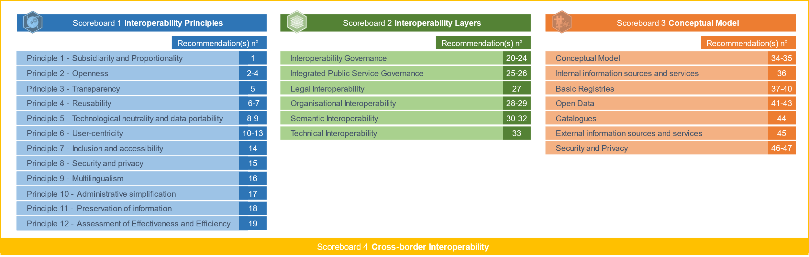

Digital Public Administration factsheet 2023
Portugal


1 Interoperability State-of-Play 4
2 Digital Public Administration Political Communications 8
3 Digital Public Administration Legislation 18
4 Digital Public Administration Infrastructure 29
5 Digital Public Administration Governance 53
6 Cross-border Digital Public Administration Services for Citizens and Businesses 56
Interoperability State-of-Play
1
In 2017, the European Commission published the European Interoperability Framework (EIF) to give specific guidance on how to set up interoperable digital public services through a set of 47 recommendations divided in three pillars. The EIF Monitoring Mechanism (MM) was built on these pillars to evaluate the level of implementation of the framework within the Member States. Whereas during the previous, the MM relied upon three scoreboards, the 2022 edition includes an additional scoreboard on cross-border interoperability, assessing the level of implementation of 35 Recommendations. The mechanism is based on a set of 91 Key Performance Indicators (KPIs) clustered within the four scoreboards (Principles, Layers, Conceptual model and Cross-border interoperability), outlined below.

Source: European Interoperability Framework Monitoring Mechanism 2022
Each scoreboard breaks down the results into thematic areas (i.e. principles). The thematic areas are evaluated on a scale from one to four, where one means a lower level of implementation and four means a higher level of implementation. The graphs below show the result of the EIF MM data collection exercise for Portugal in 2022, comparing it with the EU average as well as the performance of the country in 2021.
Source: European Interoperability Framework Monitoring Mechanism 2022
The Portuguese results on Scoreboard 1 showcase an overall good implementation of the 12 EIF Principles. Indeed, the country received the highest score of 4 and is above the EU average on 9 Principles out of 12. The country fares particularly well on Princple 1 (Subsidiarity and Proportionality) and Principle 12 (Assessment of effectiveness and efficiency), where it scores well above the EU average. Nonetheless, potential areas of improvement can be found for Principle 9 (Multilingualism) for which the score of 2 could be further improved. In particular, Portugal should further use information systems and technical, architectures that cater for multilingualism when establishing a European public service (Principle 9 – Recommendation 16).
Source: European Interoperability Framework Monitoring Mechanism 2022
Portugal’s scores on Scoreboard 2 illustrate an overall good performance of the country with scores of 3 and 4 on all the interoperability layers. Areas of improvement to strengthen the country’s implementation of the recommendations under Scoreboard 2 are mostly related to interoperability governance and legal interoperability. More precisely, the country should further use a structured, transparent, objective and common approach to assess and select standards and specifications (Interoperability governance – Recommendation 22). In addition, Pourtgual should continue to ensure that legislation is screended by means of ‘interoperability checks’, to identify any barriers to interoperability. Indeed, when it drafts a new legislation, it should seek to make it consistent with relevant legislation, by performing a ‘digital check’ and considering data protection requirements (Legal interoperability – Recommendation 27).
Source: European Interoperability Framework Monitoring Mechanism 2022
The Portuguese results with regard to Scoreboard 3 on the Conceputal model show an overall good performance, with only scores of 3 and 4. Indeed, the country scores above the EU average in 5 out of the 7 areas of the Conceptual model. Potential areas of improvement are focused on the area of Catalogues and External information sources and services, although one recommendation related to Base Registries receiving a score of 2 could also be further improved. More precisely, Portugal should further create and follow data quality assurance plans for base registries and related master data, in order to improve its score on this recommendation (Base Registries – Recommendation 40). In addition, it should continue putting in place catalogues of public services, public data and interoperability solutions and use common models for describing them (Catalogues – Recommendation 44) as well as further use external information sources and services while developing European public services (External information sources and services – Recommendation 45).
Source: European Interoperability Framework Monitoring Mechanism 2022
The results of Portugal on Scoreboard 4 on the Cross-Border Interoperability aspect showcase an overall good performance. Particularly, the country received the maximum score of 4 for five EIF Principles, four interoperability layers and three areas of the Conceptual model. Nonetheless, there are still some areas for improvement related to Principle 9 (Multilingualism – Cross-border) and the Base Registries area, for which the country received a score of 2. More particularly, Portugal should further use information systems and technical architectures that cater for multilingualism when establishing a European public service (Principle 9 – Multilingualism – Recommendation 16). In addition, the country should work towards matching each base registry with appropriate metadata including the description of its content, service assurance and responsibilities, the type of master data it keeps, conditions of access and the relevant licences, terminology, a glossary, and information about any master data it uses frm other base registries (Base Registries – Recommendation 39).
Additional information on Portugal’s results on the EIF Monitoring Mechanism is available online through interactive dashboards.
Curious about the state-of-play on digital public administrations in this country? Please find here some relevant indicators and resources on this topic: |

2
Digital Public Administration Political Communications
Strategy for the Digital Transformation of Public Administration 2021–2026
The Council for Information and Communication Technologies in Public Administration (CTIC) defined the Strategy for the Digital Transformation of Public Administration 2021-2026 and the corresponding Action Plan for the Digital Transformation of Public Administration 2021-2023, both published in September 2021 (Resolution of the Council of Ministers nº 131/2021). These documents are duly aligned with other overarching national policies, namely the Strategy for Innovation and Modernisation in the State and Public Administration 2020-2023, the Action Plan for the Digital Transition of Portugal and the national Recovery and Resilience Plan.
The Strategy aims to deliver simpler and more inclusive, integrated and transparent services to citizens and businesses, focusing on six lines of action: 1) Digital public services; 2) Valorisation of Data; 3) Reference architectures; 4) ICT skills; 5) ICT infrastructure and services; and 6) Security and trust.
As for the Action Plan, it encompasses the priority measures to be developed until 2023, when an interim assessment will be carried out and an extension for the 2024-26 period will be elaborated. The Strategy for the Digital Transformation of Public Administration 2021-2026 includes a report about the implementation of the previous ICT 2020 Strategy (effective between 2017-2020), which encompassed over 700 projects to improve public services with estimated benefits of EUR 721 million.
The Strategy and the Action Plan are aligned with the implementation of the national RRP.
National Recovery and Resilience Plan
The Portuguese Recovery and Resilience Plan, which was submitted in April 2021 to the European Commission, is a national investment plan, with an exceptional implementation period lasting until 2026. It is based on three structuring dimensions: resilience, climate change and digital transition.
In what regards digital transition, the aim is to ensure that Portugal accelerates the transition to a more digital society. For that purpose, significant reforms and investments are planned in the following areas: empowerment and digital inclusion of people through education; training in digital skills and promotion of digital literacy; digital transformation of the business sector; and digitalisation of the State. The measures to support digital objectives represent 22% of the total allocation of the plan (ca. EUR 3,660M), exceeding the threshold of 20% set by European regulation: 12 of the 20 components of the Plan have a direct contribution to achieve the digital agenda.
 SIMPLEX Programme
SIMPLEX Programme
SIMPLEX is the Portuguese flagship simplification and modernisation programme. It follows a citizen-driven approach and has a strong focus on co-creation, with the ultimate goal of simplifying as much as possible citizens and businesses’ everyday life, as well as their interaction with the public administration. SIMPLEX pursues in one single governmental programme the objectives of better regulation, administrative burden reduction, service interoperability, digitisation, red tape reduction and digital government promotion.
The programme is highly inclusive and innovative, involving citizens, entrepreneurs and public servants in determining and designing the initiatives to be implemented by the public administration. Participants are offered channels for their involvement through the organisation of nationwide meetings and brainstorming design sessions, ‘Start-up SIMPLEX’ competitions and the SIMPLEX website. Overall, SIMPLEX has already launched over 1 600 simplification measures.
SIMPLEX has proven to be a successful and replicable model, with an average annual execution rate exceeding 90% (2016-2021) and a positive feedback from the programme’s stakeholders. The effectiveness of the SIMPLEX methodology has been further recognised by the European Institute of Public Administration, which awarded SIMPLEX the European Public Service Award 2019 in the European and national category.
The 2022 edition of SIMPLEX was launched in July 2022 with 48 measures, 23 of which were already completed by the end of 2022.
‘Transform’ Programme
The ‘Transform’ Programme, launched in June 2021, is a LabX - Centre for Innovation in Public Sector action model, which articulates around three closely linked areas of action: innovation in public services, administrative simplification and the participation of all people.
It consists in a portfolio of 17 initiatives, in each of the three areas of action, which are managed as a whole to promote the transformation of the public sector. This programme materializes a vision of administrative modernisation powered by digital, but conceived and implemented dynamically by people, inside and outside the Public Administration and embedded in their management models.
 Portugal INCoDe.2030
Portugal INCoDe.2030
The National Digital Competences Initiative e.2030 - Portugal INCoDe.2030, launched in April 2017, is an inter-ministerial action that brings together the areas of economy, digital transition, science, technology, higher education, labour, solidarity and social security. It aims to upgrade the ICT basic skills of Portuguese citizens, preparing them for emerging and digitally-based employment opportunities.
This initiative is structured around five main axes: vocational education and training; qualification and requalification; inclusion; advanced training and research. It includes a variety of measures to be implemented by different governmental bodies in collaboration with the private sector, academia and civil society.
In May 2021, Portugal revised its National Digital Skills Initiative (INCoDe.2030) to promote, amongst others, the Digital Public Administration Programme (AP Digital), aimed to reinforce the digital skills of public servants and to accelerate the digital transformation of the public administration. In 2022, within the scope of the AP Digital Programme (a program that aims to qualify and retrain around 9 800 public administration workers) and in partnership with the National Institute of Administration (INA), a MOOC was created on emerging digital technologies for senior managers and public administration technicians. The National Cybersecurity Centre (CNCS) also launched the C-Academy training plan for 2023, with a set of training courses for public administration. The INCoDe.2030 programme created an ‘action INCoDe.2030’ seal for individuals, organisations and public and private entities which contribute to the improvement of digital skills in Portugal. The regulation of this seal was revised and a new regulation was published in February 2023.
Strategy for Innovation and Modernisation in the State and Public Administration
The Strategy for Innovation and Modernisation in the State and Public Administration 2020–23, promoted by the area of government responsible for State modernisation and public administration, was developed through a participatory process that involved public servants, the academia and the private sector.
The strategy was approved by the Resolution of the Council of Ministers No. 55/2020 and was presented in July 2020 as a roadmap for modernising the State and the public administration, with 14 strategic objectives distributed among four transformative axes:
These objectives are achieved through cross-cutting and sectoral measures, uniting government in a common purpose: developing a permanent transformative capacity in public administration to anticipate and respond promptly to all the challenges it faces.
Action Plan for the Digital Transition
The Action Plan for the Digital Transition (APDT) was published on 21 April 2020 (Resolution of the Council of Ministers No.30/2020) and encompasses three pillars: (i) digital empowerment of people; (ii) businesses’ digital transformation; and (iii) digitisation of the State, plus a cross-cutting catalyst dimension to accelerate the digital transition in Portugal.
The action plan consists of 12 flagship initiatives in total. In particular, the pillar relating to the digitisation of the State includes the following:
The plan continues to be implemented with progressive results. In 2022, the Upskill program reached more than 9 000 candidates while more than 40% of public administration bodies purchased cloud computing services. In addition, 29 Test Beds have been selected that aim to available services including testing and experimentation with innovative products and services, in physical or virtual spaces, for SMEs and startups.
 National Smart Cities Strategy
National Smart Cities Strategy
The National Smart Territories Strategy, to be published in 2023, is a guide to accelerate the transformation of Portuguese municipalities. It aims to create integrated planning for the implementation of smart territories, thus enabling the scaling up of small projects between municipalities and defining common practices and principles applicable to all initiatives in Portugal.
Berlin Declaration on Digital Society and Value-Based Digital Government
In December 2020, the Portuguese government signed the Berlin Declaration on Digital Society and Value-Based Digital Government, thus re-affirming its commitment – together with other European Union (EU) Member States – to foster digital transformation in order to allow citizens and businesses to harness the benefits and opportunities offered by modern digital technologies. The Declaration aims to contribute to a value-based digital transformation by addressing and strengthening digital participation and digital inclusion in European societies.
The Declaration acknowledges the public sector as an essential element for the European Single Market and a driving force for new and innovative technological solutions for public services and societal challenges.
Lisbon Declaration - Digital Democracy with a Purpose
Presented in June 2021, during the Portuguese Presidency of the EU, the Lisbon Declaration – Digital Democracy with a Purpose aims to promote human rights and fundamental freedoms, the rule of law and democratic principles in the digital world. Supported by all Member States, it builds upon the European Commission’s communication Digital Compass 2030: the European Path to the Digital Decade and the Berlin Declaration on the Digital Society and Value-Based Digital Government, to ensure that new technologies, data flows, infrastructures, digital products and services and the use of personal data be in line with international law and guarantee full respect for human rights and fundamental freedoms.
No political communication was adopted in this field to date.
National Action Plan for Open Administration
Portugal joined the Open Government Partnership (OGP) in 2017, publishing its first National Action Plan for Open Administration (NAP) in December 2018. The NAP was developed by the National Network for Open Administration through a process of co‑creation with the public sector and civil society, including an online public consultation. This plan was implemented between January 2019 and August 2020 and included eight commitments to promote transparency and access to public sector information, foster public participation and boost the use of public open data.
The second NAP, which includes 9 commitments, was published in August 2021 and will be implemented until August 2023.
Digital Identification Mechanisms
The development of Portuguese digital identification mechanisms and the promotion of their uptake by citizens, businesses and the public administration itself are at the top of the political agenda, with ongoing initiatives targeting different end-users. The constant addition of new features (e.g. mobile eSignature), the swift integration of these mechanisms in digital public services delivered by different areas of government, and their steady adoption by the private sector (e.g. banking, utilities) are some of the positive outcomes of setting electronic identification (eID) as a political priority.
Furthermore, the Strategy for the Digital Transformation of Public Administration 2021-2026 includes a target to increase the number of public services that require authentication through the national public eID ecosystem. This element is also inscribed in the national RRP, which ensures due funding.
National Strategy for Cyberspace Security 2019–2023
The National Strategy for Cyberspace Security 2019–2023 (Resolution of the Council of Ministers No. 92/2019), published on 5 June 2019, aims to deepen the security of network and information systems as a way to protect the cyberspace of national interest and to promote its free, safe and efficient use for all citizens, companies, and other public and private entities.
This strategy, which is annually assessed by the High Council of Cyberspace Security, has been developed based on the lessons learned and the developments in the digital domain since the approval of the first version in 2016. It establishes three strategic objectives for 2019-2023:
In the context of the objectives established by the National Strategy for Cyberspace Security 2019-2023, the National Cybersecurity Centre (CNCS) created the Public Administration Cybersecurity Forum, which aims to identify and disseminate cybersecurity best practices within public administration and to foster information sharing at management and policy levels.
It is also worth mentioning that, in August 2019, Portugal became a participating State in the European Centre of Excellence for Countering Hybrid Threats (Hybrid CoE), recognising said threats as a cross-cutting priority that requires a cooperative approach within the EU and NATO, and in line with the objective of creating a national plan to counter disinformation and cyberattacks.
Also worth mentioning in this context is the Cybersecurity Digital Innovation Hub (C-Hub), recognised as a national DIH in June 2021 and also part of the European Digital Innovation Hubs Network. It is coordinated by the CNCS and aggregates different stakeholders from the public sector, R&D and the private sector. The purpose of the C-Hub is to implement digital transformation processes, focusing in particular on cybersecurity, providing innovative services, advice and planning to both public and private entities (in particular SMEs). This DIH is funded by the national RRF.
National Cybersecurity Framework
In 2019, the National Cybersecurity Centre (CNCS) published the National Cybersecurity Framework to allow organisations to reduce the risk associated with cyber threats, providing the basis for any entity to meet the minimum security requirements of networks and information systems. In 2022 the CNCS developed a national certification scheme of compliance with the National Cybersecurity Framework which will enable public and private organisations to certify the implementation of their organisational, procedural, technological and human cybersecurity practices. This certification scheme can streamline public administration while strengthening the levels of cybersecurity as envisaged by the Strategy for Innovation and Modernisation in the State and Public Administration 2020–23.
 National Cyber Defence Strategy
National Cyber Defence Strategy
The Resolution of the Council of Ministers n. 106/2022 of 2 November approved the National Cyber Defence Strategy. The resolution aims to characterise and densify the strategic vision and the inter-organisational framework and ensure the development of this capacity, which is crucial for digital sovereignty.
Cybersecurity Competences Framework
Additionally, the National Cyber Security Centre (CNCS) provides a Cybersecurity Competences Framework gathering information on the references and knowledge required to fulfil cybersecurity roles and tasks, thus allowing all those who have an interest in training and hiring professionals with high cybersecurity skills. Besides contributing to the development of the cybersecurity sector, this tool will also foster decision-making processes, including the definition and formulation of relevant public policies.
Aiming to address the lack of cybersecurity experts, particularly in the public administration, the National Cybersecurity Centre developed an Advanced Cybersecurity Training Programme (C-Academy) for public administration and the private sector to (re)qualify at least 9 800 trainees until the first quarter of 2026 in partnership with educational institutions. This programme will offer approximately 44 training courses and is financed by the national RRF.
No political communication was adopted in this field to date.
No political communication was adopted in this field to date.
 Domain-specific political communications
Domain-specific political communicationsCloser Justice Plan 2022-2025 (Justiça + Próxima 2022-2025)
The Closer Justice Plan, which is in its third edition (2022-2025), aims to increase transparency and trust in judicial institutions, fostering citizens’ participation in the ideas, initiatives and projects introduced to improve justice in Portugal. It encompasses four fundamental pillars:
The methodological approach called for scheduled measures to be implemented in successive waves, with periods of analysis in collaboration with the judicial organisations and officials responsible for their implementation. The Directorate-General for Justice Policy is responsible for managing and monitoring the plan, in close coordination with the Ministry.
A third edition of the Closer Justice Plan 2022–2025 is currently underway with 112 measures, most of which financed by the Recovery and Resilience Plan (RRP), with a total investment of 226 900 000 EUR.
Consigo - Social Security Modernisation Strategy
The Consigo Strategy aims to establish a more customer-centred approach, supported by innovative and differentiating technological solutions, to strengthen the right to social security for all citizens, based on the strategic values of trust, simplification, transparency and innovation.
This strategy includes 34 initiatives, fully implemented and grouped into four major areas of intervention:
Digital Skills Training
Digital skills is a strategic training area for the public administration, as established through Ministerial Order No. 3431/2019 of 19 March 2019 of the Minister for Finance, following a proposal by the National Institute of Administration (INA). This strategic training area is implemented by the INA Training Centre through the Programme for the Development of Digital Skills (supported by the national Recovery and Resilience Plan), which includes four training syllabuses with different training paths:
More Science, Less Bureaucracy Programme
The More Science, Less Bureaucracy Programme, adopted in 2016, promotes rationalisation and administrative simplification for the scientific community, with the aim of promoting the scientific, social and cultural responsibility of all actors operating in the fields of science and technology. In this context, and considering the programme’s broad scope, it is worth highlighting some already-implemented initiatives, namely Ciência ID (unique ID for scientists) and Ciência Vitae (a national system for the management of scientific CVs linked to Ciência ID), plus a central element for monitoring scientific and technological activity, and a support system for the modernisation of public administration. The measures related to the SIMPLEX Programme, such as the NAU Platform (online platform for remote education and training), are also relevant.
 Artificial Intelligence (AI)
Artificial Intelligence (AI)GuIA - Guide for Artificial Intelligence
GuIA – Guide for Artificial Intelligence – was launched in 2022 as a reference to help public entities to devise AI-based solutions, so that these solutions are transparent and auditable, do not discriminate or increase biases. The Guide, whose development included a public consultation to collect contributions, considers five dimensions to evaluate AI projects:
The model for developing AI projects rests on concrete steps, resources and methodologies for participatory, responsible and sustainable ideation processes (e.g., creating an Ethics Committee and a Committee of Experts, with professionals from the areas where AI technologies are used; choosing an adequate project management methodology, aligned with a communication strategy with stakeholders and adjusted to expectations; including training/qualification programs for human resources and users/beneficiaries; designing a roadmap around Responsible AI).
Additionally, an online tool for self-assessment of risk was made available to be applied to AI projects. The tool was developed in line with the Guide and recommends concrete actions and suggestions for further readings, depending on the level of maturity of the users.
All documents, as well as the online tool, are accessible here.
Despite the focus on the public sector, these instruments can be used in other contexts, namely in the private sector and academia. The Guide and the self-assessment tool are a work in progress, open to society's participation and contributions.
National Strategy for Artificial Intelligence: AI Portugal 2030
The National Strategy for Artificial Intelligence, launched in June 2019, was promoted by the Portugal INCoDe.2030 coordination structure in cooperation with the Science and Technology Foundation (FCT), the National Innovation Agency (ANI), Ciência Viva and the Administrative Modernisation Agency (AMA).
Developed within Portugal INCoDe.2030’s axis 5 (‘Research’), the strategy is aligned with the European Coordinated Plan on Artificial Intelligence and is based on seven pillars:
More in general, the strategy aims to improve the frontline position in fundamental and applied AI research and increase the qualifications of the labour force and the added value brought by AI technologies to the economic growth.
In the scope of the national strategy for AI, INCoDe.2030 foresees the following initiatives:
Blockchain
Portugal is one of the signatories of the agreement that established the European Blockchain Partnership (EBP) and is one of the current co-chairs of the group, a position that significantly facilitates the access to information about the European Blockchain Services Infrastructure (EBSI). The Portuguese node has been finalised and is under management by Imprensa Nacional – Casa da Moeda.
The Portuguese Blockchain Innovation Hub was created at the city of Guarda, so that Portugal becomes technically part of EBSI and the Portuguese Public Administration has the necessary tools to start using blockchain technology. There are also research centres and several companies in Portugal developing use cases, pilots, and products in the area, for other companies and public institutes.
A Working Group was established under the coordination of the INCoDe.2030, tasked with developing a National Blockchain Strategy and an Action Plan for its implementation.
No political communication was adopted in this field to date.
Public Administration Cloud Strategy
The CTIC created a working group (CloudAP) that presented a Strategy for Cloud Computing to be adopted by the public administration with a view to increasing reliability, efficiency and flexibility, and pushing forward innovation and digital transformation. The Cloud Strategy for the public administration has already been published and, at the moment, instruments are being made available for their adoption in the public administration. This strategy defends a public cloud smart adoption, but, if more appropriate, it also allows for other scenarios.
The CloudAP group also created subgroups to identify barriers and deploy actions to accelerate Cloud adoption by the Public Sector. The subgroups are working on the following:
INA is participating in this project and is responsible for presenting a proposal for a training plan for this digital area.
Use of the Internet of Things
In January 2021, ANACOM published the report ‘Use of the Internet of Things (IoT) 2021’. This report presents the available sample information on the use of IoT equipment in Portugal and the European Union (EU), and the main characteristics of its users. In the case of IoT equipment being used by companies, the information dates back to 2021 and, in the case of the use by households, the most recent information dates back to 2020.
Advanced Computing Portugal 2030: ACP.2030
Advanced Computing Portugal, which also falls within the scope of Portugal INCoDe.2030 and is closely related to AI Portugal 2030, is a science, innovation and growth strategy aimed at promoting and expanding advanced supercomputing infrastructure in Portugal until 2030. Its purpose is to generalise access to scientific computing, foster cooperation based on advanced scientific computer networks and promote international collaboration to support advances in different areas and fields.
ACP.2030 encompasses three major domains of activity:
The national HPC network and the forthcoming Digital Innovation Hub’s network should bring new offers to the cloud-to-edge market and foster cloud adoption.
5G Strategy
The Resolution of the Council of Ministers No. 7-A/2020 approves the strategy for 5G adoption in Portugal.
This 5G Strategy sets out 13 different action points, covering specific KPIs and associated timelines. All action points/goals are aimed at ensuring strategically selected and geographically cohesive coverage, with major milestones to be reached by 2020, 2023, 2024 and 2025. This Resolution was amended with Rectification Statement no. 16-A/2020, of 7 April. Further developments took place, namely with the allocation of frequencies after the 5G auction at the end of 2021, according to the information published in ANACOM’s website, at the approval of the final report on the auction. It is also worth mentioning that ANACOM is fully committed to (ongoing) projects concerning:
Public funding for the installation of VHCN networks in "white areas" (through a public tender to be held later this year of 2023), and which aim to provide gigabit connectivity in a fixed network to places without such coverage; and
The availability of an integrated geographic information platform on the coverage of fixed and mobile electronic communications networks.
Finally, in this context of connectivity, the National Strategy for Connectivity in Very High Capacity Electronic Communications Networks for the period 2023-2030 was also approved with the Resolution of the Council of Ministers no. 139/2022 of 28 December.
 Justice Govtech Strategy
Justice Govtech Strategy
Launched on February 2023, the Justice Govtech Strategy comprises innovation and digital transformation projects developed in collaboration with universities, research centers and start-ups with the aim of making justice services more agile and efficient.
Aligned with the Portuguese Recovery and Resilience Plan, the Justice Govtech Strategy is the result of long collaboration with stakeholders in all stages of innovation, from the concept to the final product, so that the different problems in the justice area are addressed together: from authentication to new business models, automation, data exploration and more. Some initiatives are:

3
Digital Public Administration Legislation
Strategy for the Digital Transformation of Public Administration 2021-2026
Resolution of the Council of Ministers No. 131/2021 approved the Strategy for the Digital Transformation of Public Administration 2021-2026 and the respective Action Plan for Digital Transformation 2021-2023, in line with the implementation schedule of the national Recovery and Resilience Plan (RRP). The Council for Information and Communication Technologies in Public Administration (CTIC) has been mandated to implement it.
Coordination of the Digital Component of the Recovery and Resilience Plan
Resolution of the Council of Ministers No. 129/2021 approved the coordination procedure of the Public Administration's Digital Transition initiatives integrated in the RRP. It further established that such investments must comply with the principles of digital government inscribed in the common model for the design and development of digital services, published on tic.gov.pt, and comply with current European or national regulations and standards, including those defined or approved by the CTIC.
The Administrative Modernisation Agency (AMA) is responsible for ensuring the strategic compatibility of the projects to be implemented with the cross-cutting solutions included in the RRP component relating to the Public Administration’s digital transition, as well as verifying technical requirements and dependencies and promoting agility in development and alignment with the goals and milestones defined in the RRP.
TIC APP – Centre for Digital Competences of the Public Administration
Resolution of the Council of Ministers No. 22/2018 established TicAPP – the Centre for Digital Competences of the Public Administration - as a specialised skills centre for the digital transformation of the public administration. In 2019, it started its operation within AMA to support different government areas in the process of digital transformation.
TicAPP’s role is to act as a centre of digital expertise, developing projects across public administration in the fields of:
It also supports the development and implementation of some SIMPLEX emerging technology measures in the domains of AI (gIAp) and blockchain (Participa 5.0).
Single Digital Address and Public Service of Electronic Notifications
Law No. 9/2017, of 3 March, authorised the Government to create the public service of electronic notifications associated with the unique digital address.
Decree-Law No. 93/2017, of 1 August 2017, created the unique digital address, linking the electronic notifications public service to a unique digital address. The electronic notifications public service, associated to the single digital address, is regulated by Ordinance No. 365/2017, of 7 December 2017.
Decree-Law on Digital Services
Decree-Law No. 74/2014, of 13 May 2014, further amended by Decree-Law No. 105/2017, of 29 August 2017, introduced the rule of digital provision of public services by default. In parallel, it enshrined the principle of digital assistance via a Citizen Spot network as an essential complement. In this way, those who cannot, will not or do not know how to use digital tools can benefit from the support and guidance of a public servant/digital mediator. The objective is to give all citizens the possibility to access digital services.
Decree-Law on Administrative Modernisation
Decree-Law No. 135/1999, of 22 April 1999, further amended by the Decree-Law No. 73/2014, approved in May 2014, introduced important administrative modernisation measures, including the Once-Only principle, according to which citizens shall not be obliged to give the public administration the same document twice. The Once-Only principle implies several standards being applied, particularly relating to administrative communications.
Decree-Law on Zero Licensing
The Portuguese Zero Licensing Programme is one of the most representative initiatives of the eGovernment agenda. Its main objective is to considerably simplify the licensing procedures necessary to carry out several economic activities by reducing red tape through an electronic single contact point. One of the first objectives was achieved in April 2011, following the approval of Decree-Law No. 48/2011, of 1 April 2011, with the changes introduced by Decree-Law No. 141/2012, of 11 July, and became effective on 2 May 2013, as established in Ordinance No. 284/2012, of 20 September, which provided for a significant reduction in the required licences. The Programme was further strengthened with the approval of Decree-Law No. 10/2015, of 16 January 2015, which regulated the entire procedure for food and beverage establishments, as well as for trade and services establishments.
Decree-Law on the Responsible Industry System
Decree-Law No. 169/2012, of 1 August 2012, introduced the Responsible Industry System (SIR), which lays down the necessary procedures for industrial activities. The SIR was first amended by Decree-Law No. 73/2015, of 11 May 2015.
All SIR procedures are carried out electronically on the SIR Platform, which is accessible through the Entrepreneur’s Desk and competent public entities’ in-service counters.
 Decree-Law for Simplifying Environmental Licensing (Environmental Simplex)
Decree-Law for Simplifying Environmental Licensing (Environmental Simplex)
Decree Law No. 11/2023 of 10 October provides new developments concerning the simplification of environmental matters. In this respect, a measure has been launched to carry out the necessary IT developments for the introduction of tacit approval by the competent entities. The measure will come into effect in January 2024.
Portuguese Charter on Human Rights in the Digital Age
Law No. 27/2021 of 17 May approved the Portuguese Charter on Human Rights in the Digital Age, promoting Portugal's participation in the global process of transforming the Internet into an instrument for achieving freedom, equality and social justice and a space for the promotion, protection and free exercise of human rights, with a view to social inclusion in a digital environment. The Charter includes 21 articles that provide for the rights, freedoms and guarantees of citizens in the cyberspace.
Resolution of the Council of Ministers No. 91/2012
Resolution of the Council of Ministers No. 91/2012of 8 November 2012, introduced the National Digital Interoperability Regulation and the standards that can be used to provide interoperability in public administrations’ information systems. It was revised by Resolution of the Council of Ministers No. 2/2018 of 5 January 2018.
Resolution of the Council of Ministers on the Interoperability Platform for the Public Administration
Resolution of the Council of Ministers No. 42/2015 of 19 June 2015, foresaw the preferential adoption of the Interoperability Platform for the Public Administration (iAP) as primary means for exchanging information among public administration departments and entities.
Law on Access to Administrative Documents
Article 268(2) of the Portuguese Constitution provides for the fundamental right of access to administrative archives and registries, except for information related to State security, criminal investigation and personal privacy.
In addition, Law No. 26/2016, of 22 August 2016, regulates access to administrative and environmental data, as well as reuse of administrative documents. It transposes the European Parliament and Council Directive 2003/4/EC on public access to environmental information, and European Parliament and Council Directive 2003/98/EC on the re-use of public sector information. One of its highlights is the implementation of the principle of active information dissemination, by which entities falling within the scope of the law publish a set of updated information on their websites, without the citizen having to ask for it.
Law No. 26/2016 has been subject to an amendment process which resulted in Law No. 68/2021. The aim was to transpose Directive (EU) 2019/1024 of the European Parliament and of the Council of 20 June 2019 on open data and the re-use of public sector information.
Science, Technology and Higher Education
Resolution of the Council of Ministers No. 21/2016, of 11 April 2016, established the guiding principles for the implementation of a national policy on open science and universal access to knowledge. It has direct implications at the level of public information access, knowledge sharing and dissemination, and the preservation of information for its reuse.
Decree-Law on the Accessibility of Public Sector’s Websites and Mobile Applications
Decree-Law No. 83/2018 of 19 October 2018 transposed Directive (EU) 2016/2102 on the accessibility of public sector’s websites and mobile applications into Portuguese law.
According to this decree-law, all public sector bodies, including regional and local administrations, shall comply with the EU standards and best practices adopted, namely EN301549 or WCAG 2.1 ‘AA’ from W3C, thus making their websites and mobile applications more accessible to users and allowing everyone, including people with disabilities, to use the available information.
AMA shall ensure that the public sector’s websites and mobile applications comply with these rules. For that purpose, a set of tools have been made available, including an Accessibility and Usability Kit for public sector’s websites, an Accessibility WCAG 2.1 Validator – AccessMonitor -, the Accessibility Statement Generator and the Usability and Accessibility Seal of Excellence.
In order to raise awareness of the importance of accessibility, Portugal has also created the Portuguese Observatory of Digital Accessibility, where each public body may observe the level of accessibility of their own website(s).
Open Data and Reuse of Public Sector Information
Law No. 68/2021, of 26 August, approved the general principles on data, transposing Directive (EU) 2019/1024 into Portuguese law. It formally recognized dados.gov.pt as the central catalogue of open data in Portugal, with the function of aggregating, referencing, publishing and hosting open data from different bodies and sectors of the Public Administration, and also encourages dialogue to build a national data strategy.
State Organisation Information System
The State Organisation Information System (SIOE), updated and expanded by Law No. 104/2019, of 6 September 2019, is an information system which provides information on the existing public administrations and the social activity of public employers.
The afore-mentioned law, besides extending the information scope to the social activity of public employers, also extended the type of data collected to include the characteristics of public employers, identification data and other employees’ personal data.
This extension of data collection and processing with regard to employees’ data is intended to achieve the following purposes:
With regard to public employers’ data, each public employer is to draft social balance sheets or equivalent management instruments built on their own internal data, which are compiled in specific tables and are based on relevant indicators. These documents will be included in their planning and management instruments.
The SIOE may also serve as a platform for electronic processing of administrative procedures, information provision and decision-making:
The purposes of the SIOE may be pursued by sharing data via web services or by using open standards, in accordance with the law.
 Law on the Governance Model of European Funds for 2021-2027
Law on the Governance Model of European Funds for 2021-2027
Decree-Law No. 5/2023 of January 25 sets out the governance model of European funds for the 2021-2027 programming period, allowing the full implementation of European funds. The new model implements a more cross-cutting approach, clarifies the competences of governance bodies and integrates additional transparency and control requirements. The governance model applies to the funds comprising Portugal 2030. The operational structure of Portugal 2030 includes Innovation and Digital Transition among its four thematic programmes.
Law on Citizen Card
Law No. 7/2007 of 5 February 2007, introduced the Citizen Card and regulated its issuance, replacement, use and cancellation. Article 18 outlined the provisions for digital certificates, i.e. electronic documents using a digital signature. The eSignature based on a qualified certificate is optional, and can only be activated and used by citizens over the age of 16. No eSignature based on a related qualified certificate can be activated if the holder requesting a Citizen Card is deemed unsuitable.
Law No. 32/2017 of 1 June 2017, introduced significant changes to the Citizen Card, in particular the integration of the Professional Attributes Certification System (SCAP), which allows citizens to use their national eID card to digitally sign not only as citizens, but also as certified professionals of a specific recognised profession (e.g. as an engineer or as a physician). The law is in the process of being amended to comply with Regulation (EU) 2019/1157 of the European Parliament and of the Council of 20 June 2019, which aims to strengthen the security of Union citizens’ identity cards, and residence permits issued to citizens of the Union and their family members.
Trust Services
Decree-Law No. 12/2021 of 9 February 2021, provided the framework for the application of the regime introduced by Regulation (EU) No. 910/2014, of the European Parliament and of the Council, of 23 July 2014, on electronic identification and trust services for electronic transactions in the internal market (eIDAS Regulation). In particular, it regulates the activities of trust service providers established in Portugal, designating and establishing the Portuguese authorities with the powers to carry out the supervisory activities provided for in the regulation, as well as defining the sanctioning framework applicable in case of violation of the regulation’s rules.
At the same time, the opportunity was taken to consolidate the existing legislation both on the validity, effectiveness and probation value of electronic documents, and on the State’s Electronic Certification System - Public Key Infrastructure.
Law on the Digital Mobile Key
Law No. 37/2014 of 26 June 2014, established the Digital Mobile Key, an alternative and voluntary citizens’ authentication system in portals and websites of the public administration. The introduction of Law No. 32/2017, of 26 June 2017, added eSignature features, allowing citizens to digitally sign documents by entering a mobile phone number, followed by a permanent password and a unique, temporary and automatically‑generated numeric code received by SMS or via a specific smartphone app.
Administrative Rule No. 73/2018 is also relevant in this context, as it defines the terms and conditions for use of the SCAP (Professional Attributes Certification System) for the certification of professional, business and public attributes through the Citizen Card and the Digital Mobile Key, as is Administrative Rule No. 77/2018, which regulates the use of the Digital Mobile Key for digitally signed documents.
ID.gov.pt
ID.gov.pt is legally supported by Law No. 37/2014 of 26 June 2014, amended by Article 407 of Law No. 2/2020, which guarantees citizens the portability of their personal data (in compliance with the GDPR), by granting:
Law on the Use of Open Standards in Public Administration Information Systems
Law No. 36/2011, approved in June 2011, established the use of open standards in the public administrations’ information systems. This was considered a fundamental step for public institutions’ autonomy and control over their own documents, thus reducing the dependence on businesses and external applications that can properly interpret electronically stored information.
Subsequently, the RNID – originally published in 2012 and updated in 2018 by the Resolution of the Council of Ministers No. 2/2018 – established (among other standards) the OpenDocument Format (ODF) 1.2 as a mandatory standard.
Law on the Protection of Personal Data
Law No. 41/2004 of 18 August 2004, transposed into national law Directive 2002/58/EC concerning the processing of personal data and the protection of privacy in the electronic communications sector, except for Article 13, which concerned unsolicited communications. This legislation applies to the processing of personal data within the context of publicly available electronic communications services and networks, while complementing the provisions of Law No. 67/1998 (Law on the Protection of Personal Data). Its provisions ensure protection of the legitimate interests of legal entities’ subscribers, to the extent that such protection is consistent with their nature.
On 8 August 2019, Law No. 58/2019 was published, establishing the application of Regulation (EU) 2016/679 of the European Parliament and the Council of 27 April 2016, on the protection of individuals with regard to the processing of personal data and to the free movement of such data (GDPR) in Portugal, thus repealing Law No. 67/1998.
 Cybersecurity Legislation
Cybersecurity Legislation
Decree Law No. 69/2014 defined the functioning of the National Cybersecurity Centre (CNCS), and Law No. 46/2018 of 13 August 2018 established the legal regime for the security of cyberspace, transposing Directive 2016/1148 of the European Parliament and of the Council, of 6 July 2016, on measures to ensure a common level of network and information security throughout the Union, and adding public administration to its scope. This Decree-Law was complemented by Regulation No. 183/2022 published on 21 February.
In 2021 Decree-Law No. 65/2021 of 30 July was adopted, regulating the legal framework for the security of cyberspace and defining cybersecurity certification obligations in compliance with Regulation (EU) 2019/881 of the European Parliament of 17 April 2019.
In 2022, the ministerial order 11491/2022 signed by the Minister of Economy and Sea, the Minister of Science Technology and Higher Education and the Secretary of State for Digitalisation and Administrative Modernisation designated the Portuguese National Coordination Centre in line with Regulation (EU) 2021/887 of the European Parliament and of the Council of 20 May 2021 establishing the European Cybersecurity Industrial, Technology and Research Competence Centre and the Network of National Coordination Centres. The Portuguese National Coordination Centre will help decision making processes seeking to establish synergies with relevant activities at national, regional and local level, namely national policies on research, development and innovation in the area of cybersecurity.
Civil Registry
The Civil Registry was first regulated by Decree Law No. 131/1995 and later repeatedly modified. This law prescribed the type of civil life events that must be registered, identified the civil registries and their mandates, and described the archiving procedures.
Commercial Registry
The Commercial Registry is regulated by Decree Law No. 403/1986. This law established the different types of businesses, identified the authorities responsible for the registration and described the registration process, among others. Several amendments were made to this legislation.
Decree-Law no. 125/2006 of 29 June created the ‘online company’, through a special regime for the online incorporation of commercial and civil companies under commercial form, and creates the ‘brand on the spot’.
Land Registry
The Land Registry is regulated by Decree Law No. 224/1984. It identifies the incidents that must be registered and describes the registration process. This legal act was revised multiple times.
Vehicle Registry
The Vehicle Registry is regulated by Decree Law No. 54/1975 and subsequent amendments. This legislation describes a complex registration system for vehicles.
Sharing Information between the National Commercial Registry and EU Member States
Decree-Law No. 24/2019 established the rules applicable to the sharing of information between the National Commercial Registry and the commercial registries of other EU Member States in accordance with Directive 2012/17/EU.
eProcurement Legislation
The Public Procurement Code (PPC), approved by Decree-Law No. 18/2008, of 29 January 2008, transposed the following EU public procurement acts:
Law No. 96/2015, of 17 August 2015, regulates the availability and use of electronic platforms for public procurement. Currently, two platforms are used for procurement: (i) the BASE Portal, an online platform that enables the processing of contracts in the context of public procurement both in the pre- and post-award phase; and (ii) the Plataforma Eletrónica de Compras, a central online platform that manages a series of public eProcurement procedures, including eInvoicing, in the context of the framework contracts established by the government Shared Services Entity (eSPap).
Finally, Decree-Law No. 72/2018 mandated the creation of the National State Suppliers Portal, whose purpose is to simplify and expedite the procedures to verify that there are no impediments to contracting, as provided for in the PPC.
eInvoicing Legislation
In Portugal, the responsible entity for eInvoicing is the Ministry of Finance. The legislation in this field refers to the PPC, which was reviewed in September 2017 (by Decree-Law No. 111-B/2017, of 31 August 2017) in order to transpose Directive 2014/55/EU.
Decree-Law No. 123/2018, of 28 December 2018, defined the governance model for the implementation of electronic invoicing in public contracts.
Decree-Law No. 28/2019, of 15 February 2019, regulated the obligations related to the processing of invoices and other fiscally relevant documents, as well as the book‑keeping obligations, including records and respective supporting documents, that apply to VAT taxable persons.
Decree-Law No. 84/2019, of 28 June 2019, established the State budget execution rules for 2019 within the scope of financial services, defining the conditions for the adoption of the accounting information system provided by eSPap.
Ordinance No. 289/2019, of 5 September 2019, regulated complementary elements of the electronic invoice.
Prior Opinion
Decree-Law No. 107/2012, of 18 May 2012, regulated the duty to provide information and the issuing of an opinion prior to the acquisition of ICT goods/services costing EUR 10 000 or more. It applies to both direct and indirect administration bodies and State services. AMA is the entity responsible for assessing the compatibility of the acquisition proposals with the strategic objectives of the digital transformation of the public administration (including, for example, an assessment of free and open source software solutions, whose total ownership cost is lower than that of a solution entailing proprietary software or specific licensing).
Education Legislation
Executive Order No. 6/2018, of 12 April 2018, established the school registration procedures and their renewal, and the norms to observe concerning children and pupils’ distribution. In this context, it established that the preferred channel for the enrolment of pupils should be the digital one.
Decree-Law No. 65/2018, of 16 August 2018, amended the legal regime for higher education degrees and diplomas, previously established by Decree-Law No. 74/2006, of 24 March 2006, improving simplification and dematerialisation.
Decree-Law No. 66/2018, of 16 August 2018, approved the legal regime for the recognition of academic degrees and diplomas of higher education awarded by foreign higher education institutions. In this context, it established that the recognition of foreign academic degrees and diplomas of higher education is carried out through an electronic platform.
Decree-Law No. 55/2018, of 6 July 2018, established the curriculum for primary and secondary education, and the guiding principles for learning assessment. In line with the priorities of simplification and dematerialisation of the public administration, it states that the certificates and diplomas templates for the various educational and training paths should be issued by schools in an electronic format.
Resolution of the Council of Ministers No. 30/2020 approved the Action Plan for the Digital Transition, which recommends the provision of individual equipment to students and teachers (in various delivery phases), and provides for the guarantee of free mobile connectivity for students and teachers and access to quality digital educational resources (e.g. digital manuals and repositories of digital educational resources (RED)), as well as a strong commitment to a ‘digital teacher’ training plan.
Ordinance No. 194/2021, of 17 September, defines the templates for the diplomas and certificates of basic and upper-secondary education pathways in an electronic format.
Digital Skills Training
Order No. 3431/2019, of 19 March 2019, stipulated that training in digital skills is a strategic area for the public administration.
Ordinance No. 250-A/2020, of 23 October 2020, created the Programme ‘Jovem + Digital’, targeting the development of digital skills in young adults aged between 18 and 35, with the strategic objective of enhancing the quality, efficiency and agility of training and professional qualification.
Ordinance No. 179/2021, of 27 August, created the Programme “Digital Skills Certificate”. This programme aims to raise the digital skills of the Portuguese population, enhancing their social inclusion and employability. It is targeted at citizens aged 18 or over willing to obtain training, skills recognition or certification of skills in the digital area. The certification awarded is in line with the Digital Competence Dynamic Reference Framework, corresponding to levels 1, 2 and 3. Each pathway lasts up to 200 hours.
Code of Criminal Procedure
Law No. 1/2018, of 29 January 2018, amended the Code of Criminal Procedure, allowing to make notifications to legal representatives by electronic means.
Foreign Languages in the Civil Registry
Decree-Law No. 51/2018, of 25 June 2018, ensured that the documents to be registered in the Civil Registry can be written in foreign languages. To apply for such registration, applicants must make an appointment online.
Online Certificates for Organisations
Decree-Law No. 52/2018, of 25 June 2018, prepared the creation of online certificates for organisations. These certificates allow for an electronic search of organisations on the constantly updated Central Registry of Organisations.
Electronic Processing of Cases in the Administrative and Fiscal Jurisdiction
Law No. 118/2019, of 17 September 2019, amending, among other things, the Code of Procedure in Administrative Courts, modified procedural regimes within the administrative and fiscal jurisdiction, making it mandatory to process cases electronically in administrative courts. This allows for the speeding up of cases and increases efficiency in the processing of disputes. At the same time, the speeding up of proceedings improves the quality of services offered to citizens by the public administration.
 Social Security Legislation
Social Security Legislation
The social security system in Portugal is supported by the following laws:
Portuguese Charter on Human Rights in the Digital Age
Law no. 27/2021 of May 17th adopted the Portuguese Charter on Human Rights in the Digital Age. Its Article 9 states that the use of artificial intelligence and robots shall be “guided by the respect of fundamental rights, guaranteeing a fair balance between the principles of explicability, security, transparency and responsibility, which takes into account the circumstances of each specific case and establishes processes aimed at avoiding any prejudice and any form of discrimination”.
No legislation was adopted in this field to date.
No legislation was adopted in this field to date.
No legislation was adopted in this field to date.
No legislation was adopted in this field to date.
No legislation was adopted in this field to date.
Broadband Universal Service
Decree-Law No. 66/2021, of 30 July 2021, approved the creation of a social tariff for the provision of broadband internet access services in Portugal in the scope of universal service. The social tariff is made available by all companies that provide this type of service to low income consumers or consumers with special social needs, with the aim of mitigating the high price of access as a barrier to the use of broadband Internet. The tariff comprises a monthly fee of EUR 5 (EUR 6,15 including 23% VAT) for the broadband internet access service and a one-off maximum price of EUR 21,45 euros (EUR 26,38 with 23% VAT) for activating the service and/or to access equipment. The procedures and conditions necessary for the application of Decree-Law No. 66/2021 of 30 July are regulated by Ordinance No. 274-A/2021 of 29 November.
 Coverage of Fixed and Mobile Networks
Coverage of Fixed and Mobile Networks National Strategy for Connectivity in Very High Capacity Electronic Communications Networks 2023-2030
National Strategy for Connectivity in Very High Capacity Electronic Communications Networks 2023-2030
Resolution of the Council of Ministers No. 139/2022 of 28 December approved the National Strategy for Connectivity in VHCN 2023-2030. This strategy takes into account the preparatory work carried out in 2021 and 2022 to guarantee access for the entire population to VHCN, which resulted in public consultations, launched on 6 January and 26 October 2022, on the coverage of such networks and on the options regarding the installation of these networks with recourse to public funding, including from the European Union, in addition to private investment, in so-called white areas. It also formalises and aggregates the government options regarding the policies to be pursued in order to achieve total national coverage with these networks.
Resolution of the Council of Ministers No. 18/2020 of 27 March approves the revision of the broadband internet access service throughout the territory and, in particular, in inland Portugal, and recognises the importance of regularly updated information on network coverage.
Free Technological Zones (ZLT)
Resolution of the Council of Ministers No. 29/2020 established general principles for the creation and regulation of Free Technological Zones (ZLT), which are physical environments geographically located in a real or near-real environment, aimed at the safe testing of technologies, products, services and innovative technological processes with the support and monitoring of the respective competent authorities.
Decree-Law No. 67/2021 established the basic legal framework applicable to the governance model to promote technological innovation with the setup of ZLTs. It is expected that technologies such as AI, distributed ledger, cloud computing, IoT and HPC can be boosted in this context.

4
Digital Public Administration Infrastructure
Government Portal
The Government Portal is the institutional website of the Portuguese government, providing information to businesses and citizens on matters such as the government programme, the government composition and diverse documentation (e.g. political communications) or ongoing public consultations, as well as generic information about Portugal.
 ePortugal
ePortugal
ePortugal.gov was launched in February 2019 (Resolution of the Council of Ministers No. 46/2019, of 22 February 2019) as a Single Digital Gateway which centralises all digital public services for both citizens and companies, as well as the information inscribed in the National Catalogue of Entities and Services (directory of public entities, services, points of care, websites, mobile applications, etc.).
The portal was developed under SIMPLEX, the national simplification and modernisation programme, and is organised around life and business events according to the core public service vocabulary (e.g. having a child, getting married and retiring). It provides both informational and transactional services, in line with the citizen-driven approach that the Portuguese government has been implementing for the last few years. Additionally, the portal integrates the Entrepreneur’s Desk, which is the single point of contact for digital services related to the exercise of economic activity.
The ePortugal Portal is dynamic and adaptable to individual users: it offers a Reserved Area where users can check information regarding their relationship with the public administration and access a documents folder, in which they can save and share files with other registered users or with public entities. Likewise, ePortugal provides innovative support instruments such as the Citizen Map (available as an app, for Android and iOS), which provides georeferenced information for all public services and digital queue tickets for onsite public services, and the AI-powered chatbot SIGMA, that helps users to find and use the available services and allows to request a contact with one of the available helplines for citizens and entrepreneurs.
ePortugal is constantly evolving and integrating new services and information, in line with the Single Digital Gateway Regulation (EU). New features include: expansion of the business activities, integrating new information and services (2021); new information for migrants living in Portugal (2022).
 Open Data (Dados.gov)
Open Data (Dados.gov)
Following international practices in the area (e.g. the US or the UK Data.Gov projects), AMA has committed to the development of a wide and open platform containing all kinds of data from public bodies. The objective of this policy - keeping in mind the right of all citizens to consult public administration information - is to facilitate citizens’ access to public open data. As a result, the Open Data Portal makes available to citizens an extensive range of information from very diverse areas.
The Dados.gov web-portal was revamped in May 2018, updating the 2012 version to conform to the best international practices in the field and incorporate innovative solutions in terms of user experience, content structure, data integration and user licenses.
Managed by AMA and available in open source, Dados.gov is based on the French UDATA platform, which was developed by ETALAB, and which already has more than 4 900 datasets. It is free and open to all users who want to access data, but also to citizens and organisations who wish to make available data of public interest.
The efforts made to streamline and promote the national open data ecosystem and community allowed Portugal to reach the 20th position on the Open Data Maturity Report 2022, rising from the ‘Beginner’ category to ‘Follower’ (the 2nd maturity level within the 4 existing levels). The report identifies the following good practices:
 Tic.gov.pt
Tic.gov.pt
Participa.gov
Participa.gov is a centralised platform that supports all of Public Administration’s participatory processes (e.g. participatory budgets), be it open to the general population or restricted to the public sector (nationwide or local processes). End-users can participate in open calls by submitting their own proposals and/or by voting on their preferred ones, making use of secure authentication and voting mechanisms, namely the national eID mechanisms (recognized by the European eIDAS Regulation with the highest level of assurance) and blockchain technology, guaranteeing transparency, security and anonymity in the voting process and avoiding possible fraud.
Recuperar Portugal
This portal was developed to manage, monitor and execute the national RRP. It presents relevant statistics in this regard, namely the volume of contracts signed between ‘Recuperar Portugal’ and the entities responsible for the implementation of investments with the Plan funds.
Transparency Plus
Launched in April 2021, Transparency Plus is a digital platform that allows citizens to access easy-to-read information on public resources and policies. The portal kicked off with an area dedicated to European funding, which provides real-time, accessible information on the progress of measures and projects financed or co-financed by European funds, related to NextGenerationEU and the Multiannual Financial Framework 2021-2027 (including the national RRP).
The platform also focuses on the National State Budget and the Municipalities, encompassing 5 areas of analysis: economic dynamics, financial management, administrative management, tax decisions and decentralisation of competences. For each of these areas, a set of reference indicators is presented to provide a global picture for the 308 municipalities.
All data updated on the portal are imported from the national open data portal, dados.gov.pt, which led several entities to automate the publication of open data, thus producing an impact on society.
The involvement of citizens with special needs in the design and testing of the platform allowed improvements to be incorporated, guaranteeing accessibility for all citizens. The portal was awarded the golden badge for accessibility and usability, the highest standards of compliance with best practices in this field.
Web Accessibility and Usability Ecosystem
AMA is responsible for developing, promoting and monitoring the implementation of usability and accessibility guidelines and regulations, ensuring compliance with national and international standards and best practices (namely EN301549 and WCAG 2.1 from W3C) and enabling citizens, especially those with disabilities, to access and use public services online.
To this end, AMA made available an ecosystem, aggregated in the acessibilidade.gov.pt web portal, with information about laws, guidelines and best practices, as well as practical online tools for public entities, which include:
The Usability and Accessibility Seal, in particular, is an indicator of the quality of the contents and services made available online by public and private entities, according to three levels of compliance with standard requirements: bronze seal (lowest level of conformity, i.e. to level 1 requirements), silver seal (intermediate level of conformity) and gold seal (highest level of conformity). For instance, all the websites and mobile applications that have a gold seal were subject to usability tests that involved participants with disabilities.
App.gov.pt
App.gov.pt was launched in 2018 as a directory of mobile apps that centralised various applications made available by the public administration to make life easier for citizens. The app was developed and is managed by AMA, which ensured the indexation of the apps developed by the public bodies themselves. App.gov.pt is available for both Android and iOS devices.
The Bussola.gov is a SIMPLEX initiative that was launched in 2020 as an intranet portal for public servants, aiming to foster sharing of knowledge and experiences, collaboration between entities and the provision of content relating to careers, employment exchange, training, social services and existing protocols.
OGP Portugal
The OGP Portugal Portal was developed within the scope of the Portuguese participation in the OGP, to centralise all information about the process, progress, evolution and monitoring of the National Open Administration Action Plan, and to foster public participation. Citizens are invited to contribute to the promotion of open administration in Portugal; the portal collects the contributions and ensures that feedback is given to them. This portal has been available since October 2018 and is also highlighted in the ‘Participation’ area of the ePortugal Portal, with the objective of promoting its dissemination and visibility. The activities of OGP Portugal are allowing a free exchange of ideas and suggestions between civil society organisations and public entities, highlighting the relevance of including civil society topics. These must continue to be considered in future to keep promoting open administration in Portuguese public entities, namely the digital transition process and the guarantee of a wider inclusion and representativeness within the participation in State activities.
Tax Authority Portal
The Ministry of Finance makes available to citizens and companies a web portal allowing for tax submission and the consultation of their fiscal situation, among a wide range of digital services. The Portal das Financas allows secure authentication via the Citizen Card and the Digital Mobile Key. On the web portal, users can consult their tax files and statistics and conduct simulations. In addition, a complimentary app was made available in 2018 to facilitate the payment of taxes and the consultation of the citizen’s fiscal status.
Advanced functionalities were recently integrated into the system allowing for enhanced usability, the most notable being the automated income tax declaration. The pre-filling of the declaration already began several years ago, culminating in the current fully automated procedure, in which the personal income tax can be settled without any intervention by the taxpayer. Developed as a SIMPLEX measure, this feature automatically prefills the citizen’s income statement with all relevant data conforming to data protection regulations. Then, the declaration receipts and the notification of the final tax calculation can be confirmed electronically.
 1Bilhete.pt - Nationwide Ticketing System for Public Transport
1Bilhete.pt - Nationwide Ticketing System for Public Transport
Launched in 2023, the 1Bilhete.pt platform will enable interoperability between different ticketing systems, the universal use of media (cards and tickets) and the integration of mobility services.
This platform allows, with any public transportation card or mobile application, to acquire and validate transportation tickets from other systems, without the need to purchase a new card or install another application on your cell phone. In addition, it will be possible to create public transportation travel tickets with national coverage and use bank cards, in a physical or virtual environment, to acquire or validate transportation tickets, with all the benefits resulting from the use of a unified account.
National Health System
The National Health System (NHS) Portal provides citizens with online access to a wide range of information and services, including a Transparency section centralising the data produced by health care entities and making it available for reuse without any restrictions.
Once logged into the SNS24, citizens and health professionals have direct access to RSE – the Portuguese Electronic Health Records (EHR) platform, which aims to facilitate the sharing of information between citizens, health professionals and public health entities. SNS24 also makes available a sign language video functionality that allows deaf citizens to communicate with NHS professionals with the support of a sign language interpreter.
In the context of the fight against the COVID-19 pandemic, SNS24 allows the issuance of provisional declarations of precautionary isolation in an electronic format, and the ‘Evaluate Symptoms’ functionality was improved to cover COVID-19.
Social Security - Direct Social Security
Via the Direct Social Security Portal, citizens can access their social security data and perform a wide range of operations, from submitting requests for unemployment benefits, child allowances and leaves, to making payments, while enjoying and having access to the information they need regarding their rights and duties in the social security domains. The Portuguese Social Security has been strongly investing in a digital transformation strategy, to respond to the needs of citizens and economic agents, and providing them with a simple, inclusive, intuitive and transparent experience, in self-service mode, with total convenience and autonomy. To this end, the Direct Social Security Portal currently offers over 250 digital services, including the possibility to request pensions and social benefits, consult and update information on a citizen’s contribution history and obtain an integrated overview of all credits and debits. In the portal, employers and independent workers may also find the main services that allow them to fulfil their obligations to Social Security. Finally, the Direct Social Security Portal includes the possibility of authentication with the Digital Mobile Key and the Citizen Card (eID). A lot of the information is already pre-filled, based on back-office automation and interconnection with other public organisations.
Caixa Geral de Aposentações – CGADirecta (Pensions)
Since 2018, Caixa Geral de Aposentações, I.P. (CGA) has been investing in a digital transformation strategy to substantially improve its entire information system, with a special focus on its internet portal, in order to respond to the growing level of user demand and improve the level of service provided. This will enable faster decisions about users' requests and the satisfaction of their information needs in real time and in a more convenient way.
For this purpose, CGA has made various functionalities available in a restricted access area called CGADirecta, namely: consulting information on the monthly pension and discounts in payment up to one year before, obtaining statements on the value of the pension (Multi-Purpose Declaration) and statements for Personal Income Tax (IRS) purposes, filling in and submitting online the application for family benefits, survivor's pension, reimbursement of funeral expenses and death grant, changing data, consulting the status of the retirement pension application in real time, as well as viewing the administrative file.
CGADirecta allows authentication and registration using the Citizen Card, the Digital Mobile Key or the Tax Identification Number with the access credentials to the Finance Portal or the CGA User Number with the access key. The Pension Claim Platform was also made available, with pre-filled contents, facilitating the work of the user, and allowing an almost fully completed instruction to be automatically initiated and made available to the applicant, bringing significant productivity gains.
Education and Training Courses Portal
The Education and Training Courses Portal is a national technological platform that allows for a personalised search of education and training offers currently available in the Portuguese education and training system.
Qualifica
The Qualifica Portal aims to ease access to information, services and tools included in the Qualifica Programme (i.e. the National Credit System for vocational education and training and the Qualifica Passport). It targets trainees, employers, and adult education and training providers. It enables citizens to find a Qualifica Centre, to consult education and training opportunities, and to update the Qualifica Passport. The Qualifica Passport is an online tool that records the education and training pathways attained; it also provides guidance to pathways in order to complete or obtain a new qualification, taking into consideration the already attained training and the acquired skills.
National Catalogue of Qualifications
The National Catalogue of Qualifications has been renewed to become more user‑friendly, clearer and more suitable to the needs of its main users. As such, the new website:
National Commission for the Promotion of the Rights and the Protection of Children and Young People
The National Commission for the Promotion of the Rights and the Protection of Children and Young People (CNPDPCJ) manages the CNPDPCJ Portal, which provides citizens with a wide range of information on: (i) the promotion and protection of children and young people; (ii) activities pursued by the CNPDPCJ and other national entities towards the implementation and realisation of these goals; (iii) the national and international framework of the activities developed by the CNPDPCJ; and (iv) the Portuguese system of promotion and protection of children and young people in danger. The CNPDPCJ Portal also conveys updated data and assessment reports on the activities of the local Commissions for the Protection of Children and Young People and provides citizens with an additional channel for reporting situations of children and young people at risk or in danger, including by filling out an online form that is automatically forwarded to the competent Local Commission once submitted.
DGERT Portal
In terms of digital transformation, since April 2018, the Directorate-General of Employment and Labour Relations (DGERT) has made available, within the scope of its attributions in terms of collective regulation and labour organisations, access to various information services aimed at companies and workers, organizations representing workers and employers, public services and society in general, as well as access to data on trade unions and employers' organizations registered in this service since 1975, including, among others, elements relating to statutes, elected directors and instruments of collective labour regulations concluded, which include:
National Official Statistics
The Statistics Portal for Official Statistics, the website of Statistics Portugal (INE), allows citizens, companies and researchers to access official statistics about the Portuguese society, regarding the social, economic and environmental domains. It is available in Portuguese and English languages and data access is free of charge. It also displays a Web approach for electronic replies to official statistical surveys – the WebInq.
The Portal is optimised for access from mobile devices such as tablets and smartphones, and it makes available a set of feeds (RSS, ICS and JSON) that provide direct connection to other third-party applications, allowing users to receive INE’s news in real time on their IT systems or computers. It also provides a REST API that allows for the creation and extraction of a catalogue of indicators available in the website database, thus enabling users to extract statistical indicators and related metadata.
In the Portal is also possible to find an IT platform for Census 2021 final results, at parish level, allowing an easy access to census information.
Online Security Accreditation
The Online Security Accreditation Platform (CRESO), managed by the National Security Office, was developed in the scope of the SIMPLEX Programme and aims to make it easier for citizens and companies to interact with the public administration, whenever it is necessary to obtain or renew a security clearance. For this purpose, the Resolution of the Council of Ministers No. 70/2019, of 11 April 2019, declassified some of the forms required to apply for accreditation.
Justice Portal
The Justice Portal, launched by the Ministry of Justice in 2017, offers a wide catalogue of services related to the area of justice, including courts, registries and notary, reintegration and prison services, and industrial property. The platform congregates in a single website information about the judicial services in a clearer and more accessible language (all contents are written in ‘plain language and can be easily searched by using a simple interface). The platform marked a watershed moment in how citizens, companies and their agents interact with the various services in the justice sector.
The creation of a common network to aggregate the websites of the area of governance of Justice is also relevant with a view to enabling better sharing and availability of content, news, statistics and documents. In this context, the justica.gov.pt network integrates all fourteen Ministry of Justice’s Departaments websites.
CITIUS
CITIUS (the Latin word for ‘faster’ from the Olympic motto) is the project aimed at the dematerialisation of processes in judicial courts developed by the Ministry of Justice, encompassing computer applications for the various judicial operators (judicial magistrates, prosecutors, judicial officials and judicial agents).
The CITIUS service enables the electronic submission of documents for their use in court cases. Lawyers can present evidence and documents to the courts, check their distribution, look up cases and keep track of fees electronically. For civil cases and injunctions, most correspondence can be conducted electronically. Sets of copies and duplicates are no longer needed. The system is secure in that the use of personal, non-transferable electronic certificates is required.
Justice Open Data
Partilha.justica.gov is a portal that acts as an extension of the open government plan in the sector of justice to publish high-value datasets to achieve more participation, more transparency and more justice. More accountability and availability of datasets gives citizens and scholars the opportunity to adopt participatory and collaborative approaches to the management of the Portuguese justice system. Participatory democracy is made by everyone.
Justice Statistics
The Justice Statistical Information System covers several areas, including courts, registries and notaries, police forces and other investigative bodies, alternative dispute resolution bodies, rehabilitation, and the enforcement of sentences and measures. The Justice Statistical Information System includes information collected from different entities and services, which contributes to the portrayal of different topics of interest to society. This systems is fully available in English and all data sets in open formats. It also offers geographical information on various justice services.
Electronic Yellow Book
The Electronic Yellow Book, launched as a SIMPLEX+ initiative, allows businesses and citizens to leave a complaint or a suggestion, or write a compliment regarding the public administration and its services, namely the digital ones.
Employment Service
The IEFP OnLine Portal provides citizens and companies with a wide range of services related to job seekers, including unemployment allowances, browsing and applying for training opportunities, advertising jobs, automated cross-matching between employers and job seekers, and applying to support under the framework of labour market policies.
With electronic authentication via Citizen Card or Digital Mobile Key, the portal allows a totally dematerialised relationship between the user and the public employment service.
Public Employment Pool website - BEP
Managed by the Directorate-General for Administration and Public Employment, the BEP is a public employment website ensuring the connection between public employment supply and demand, simplifying and providing greater transparency and efficiency to the recruitment and mobility processes.
Public Procurement - BASE
The BASE Portal gathers all relevant information on public procurement in Portugal, making it available to citizens in an open and transparent way.
It was created after the publication of the Portuguese Public Contracts Code (CCP), in January 2008, which transposed Directives 2004/17/EC and 2004/18/EC. Ordinance No. 57/2018, of 26 February 2018, regulates the functioning and management of the BASE Portal and approves the data models to be transmitted to this platform, for the purposes of the provisions of the CCP.
Education Human Resources
The Education Human Resources Interactive System (SIGRHE) is a web platform based on open-source technology, whose function is to manage the education human resources processes and dematerialise the administrative procedures.
This platform, which was conceived as a shared service, has currently about 400 000 registered users and is available 24/7. SIGRHE users are extremely varied, covering the whole of the educational community. Besides individual users, such as teachers or non‑teaching staff, also others, such as representatives of school clusters/non-clustered schools and parents’ associations or local authorities, use the platform for various purposes.
SIGRHE also allows access to various services to the different bodies of the Ministry of Education, for whom it works as a tool for consultation, analysis, control and/or validation of data on both staff and schools, always in strict compliance with data protection regulations.
Developed in 2011, SIGRHE is a dynamic platform designed to allow constant development and upgrade by adding and configuring other applications, according to the needs of the Directorate-General for School Administration (DGAE) and the whole education system, as well as by introducing changes, corrections and adaptations that may seem necessary. Amongst the functions provided by the SIGHRE platform, module E72 (made available in March 2020) stands out as a digital communication service (available 24h/day, 365 days/year) conceived to respond to citizens and organisations within 72 hours, as part of a centralised communication policy.
 Housing Portal
Housing Portal
The Housing Portal was created by the Institute for Housing and Urban Rehabilitation, I.P. (IHRU, I.P.) to provide information and support to citizens, families and companies in various aspects related to housing and urban rehabilitation in Portugal (e.g., social rental housing, development and financial support for housing rehabilitation, programs for the promotion of affordable housing, laws and regulations related to housing programs and initiatives).
 Academia Portugal Digital
Academia Portugal Digital
Launched in 2022 to promote professional qualification and requalification, Academia Portugal Digital is a tool for: 1) assessing and self-diagnosing digital skills; 2) providing a ‘digital shop’ of online courses that aim to provide digital skills. This free course aggregator platform incorporates courses from the private sector and MOOCs, allowing everyone to assess their digital skills, receive training and explore career opportunities. The tool offers multiple options to help test, improve, and certify the digital level of the users.
travelBI
The business intelligence platform TravelBI, developed by Turismo de Portugal, integrates information from various national and international information systems, disseminating the main performance indicators of the tourism sector, competitive analyses and the continuous monitoring of the 25 main incoming markets for Portugal. That way, tourism investors and companies can easily access statistical information and analyses on tourism, the main markets, and national strategic and emerging market trends. In order o adapt to the needs of companies and the market for more information, TravelBI includes a specific Open Data Portal.
Travel Arbitral Commission
Turismo de Portugal launched an online platform that makes it simpler and faster for travellers to submit and pursue cases before the Arbitral Commission for the resolution of disputes arising from their dealings with travel and tourism agencies, when the Travel and Tourism Guarantee Fund is activated. To the benefit of all concerned parties, the procedure can now take place entirely in digital and dematerialised form, also contributing to the strategic goal of digitising this sector.
Empresas Turismo 360° Programme
With the aim of promoting sustainability guidelines in the sector's value chain and boosting its potential within the framework of the 2030 Agenda, Turismo de Portugal launched the Empresas Turismo 360° Programme, focused on building a global model for measuring and evaluating the environmental, social and governance performance of tourism enterprises.
Clean&Safe Stamp
The Clean & Safe Stamp was created in 2020 by Turismo de Portugal to recognise companies and leisure activities compliant with health safety recommendations issued by the National Tourist Authority according to National Health Authority guidelines in view of avoiding the risks of contagion by covid-19. The 2022 version of the Clean & Safe Stamp maintains the focus on the health component but extends its scope to other possible public health crises and to a cross-cutting safety dimension for tourists, associated with possible vulnerabilities and risks inherent to their various experiences, such as those resulting from extreme phenomena (rural fires, floods, earthquakes or tsunamis) and international constraints (cybercrime, refugees). This stamp is free, optional and valid until June 2024, as long as compliance with the established procedures is maintained.
Tourism Digital Academy
The Tourism Digital Academy was created for the development and training of people in the tourism sector. It is a gateway for those who want to train, access workshops and seminars, or join tailor-made training services, provided by the 12 Turismo de Portugal Hotel Schools. The platform manages all the executive training courses provided by Turismo de Portugal and its schools, facilitating access to free and diversified training that contributes to the improvement of professional qualifications, as a complement to the on-site training carried out in the network of Turismo de Portugal schools.
Buy from Portugal
This ‘business match-making’ tool, managed by AICEP, makes it possible to showcase the national offer in a valuable, filtered and customised way, providing tailor-made solutions to international online demand. The website delivers all the necessary information about Portuguese companies, their products, services and brands, promoting new contacts, networking and business opportunities.
Invest in Portugal and Investment Optimiser
Developed as a one-stop-shop for foreign entrepreneurs who are searching and selecting new countries for investment, expansion and business growth, the Investment Optimiser is a simulator that helps users to spot the top places to invest in Portugal, according to their profile and priorities. This tool gathers data from multiple sources at a national, regional and county level, and crosses every relevant indicator to deliver a consistent list of ranked suggestions. Associated with the Optimiser there is an interface with the local administration to support the investment process through the development of a collaborative pilot project, with benefits for the management and conduction of operational activity, transformation, automation and standardisation of processes, leading to an increased local efficiency in preparing, promoting and attracting investments.
Only Portugal: Meet the Country
The website www.onlyportugal.pt is a gateway to Portugal aimed at buyers, investors, foreign students, tourists or the public in general, and works as a single access point to information about buying, investing, studying, traveling and getting to know Portugal.
ANACOM's Geospatial Platform
GEO.ANACOM allows to view information about electronic communications and postal services in a geographic, georeferenced and easy-to-use format on any device. The aim is to provide answers to practical day-to-day questions, such as which operator has the best mobile broadband coverage, quality of service and fixed broadband coverage in a certain location. This technology ecosystem comprises 3 portals for geographic visualisation: i) the Internal Portal; ii) the SIIA - Infrastructure Information System (SIIA) Portal; and iii) the Public Portal.
Platform for Termination of Contracts
Law No 16/2022 of 16 August, which approved the new Electronic Communications Law, enshrined, among other matters, the possibility for consumers to exercise their rights through an electronic platform created and managed by the Directorate General for the Consumer. In order to facilitate the termination of contracts and the mobility of consumers, Ordinance No. 284/2022 of 28 November establishes the functionalities of a new Platform for the Termination of Contracts. In the first phase of operation of this platform, consumers can exercise their right to cease their electronic communications contracts by termination; in the second phase of operation of this digital tool, other functionalities will be made available. In particular, it will be possible for consumers to exercise the right to suspend their contracts or the right to cease contracts by expiry or cancellation. Furthermore, it will also be possible to communicate the death of parties to contracts.
 Platform for Information on the Coverage of Fixed and Mobile Networks
Platform for Information on the Coverage of Fixed and Mobile Networks
Decree-Law No. 40/2022 of 6 June of 2022 implements an information platform that allows citizens, businesses, the State and other entities to know the coverage and connectivity of mobile and fixed networks across the country.
ConsultaLex
ConsultaLex is a central portal for public legislative consultations, accessible to all, which allows citizens to participate in the legislative process. Citizens can consult the files and formulate suggestions, as well as follow at all times the drafting process of laws, until their final approval. The creation of ConsultaLex is one of the measures foreseen by the first National Open Administration Action Plan, which was itself developed via a participatory process.
Culture Portal
The Culture Portal aggregates relevant information on the national cultural offer, cultural routes and cultural spaces all across the country. This portal has been evolving with new functionalities, including the addition of customisation options and a module for the acquisition of tickets for public buildings (museums, palaces and monuments) and guided visits, as well as the georeferencing of cultural sites and relevant entities.
European Capital of Culture Portugal 2027
Created in 2021, this website is intended to accompany the process of the European Capital of Culture – in 2027, where a Portuguese city and a Latvian city will be named European Capitals of Culture. This initiative seeks to provide Europeans with the opportunity to learn from each other about their respective cultures, enjoy their history and common values, experience the feeling of belonging to the same European community, strengthen ties and develop European cultural partnerships, as well as highlight the role of culture in development of cities.
Integrated System of the Institute of Cinema and Audiovisual (HAL Platform)
The Institute of Cinema and Audiovisual (ICA) is a public institute that supports the development of cinematographic and audiovisual activities. The HAL Platform was implemented in 2021, in view of a digital transition and a continuous improvement aimed at strengthening and simplifying the relationship between the ICA and the its beneficiaries, promoting gains in effectiveness and efficiency in the procedural process, both in terms of applications and in terms of monitoring the implementation of the supported projects.
General Inspectorate of Cultural Activities - Online Registries
The General Inspectorate of Cultural Activities (IGAC) is responsible for protecting copyright and related rights, together with other competencies in the field of cultural activities. Its web portal makes available online services such as: the registry of cultural professionals (under the artist statute); the registry of literary and artistic works; the registry of promoters of artistic shows; or the title application process for cinematographic or audiovisual works distributed in Portugal.
Local Administrations
Managed by the Directorate-General of Local Administrations, the Local Administrations Portal gathers information on all Portuguese local administrations and provides several online services to support them, such as (i) the Integrated Local Administrations Information System (SIIAL) and the Information System for the Local Administration Subsector (SISAL), which centralise the collection and validation of financial and non-financial information on local administrations; or (ii) the Information System for the Legal Regime of Urbanisation and Building, which simplifies and dematerialises the processes of urbanisation operations.
This portal is directed to both public servants and citizens in general, as a complementary channel to the local administrations’ institutional websites.
LGP Academy
The LGP Academy project, which is currently in the process of renovating and implementing a new digital platform, started in the Casa Pia de Lisboa, after the identification of specific necessities due to the lack of vocabulary in Portuguese Sign Language in the school curriculum.
In this way the LGP Academy provides the hearing-impaired with hundreds of mathematics, physics, chemistry, history, art and design, philosophy and sports videos among other curriculums of different educational stages. The videos are in bilingual format, i.e. in Portuguese (written and oral) and Portuguese Sign Language (LGP). This work allows the creation and dissemination of bilingual pedagogical materials (LGP and LP) from preschool education to the 12th grade in order to fill a gap that exists in the national education of the hearing-impaired. The perspective is to build bilingual pedagogical materials that could be tested and applied in the classroom, thus contributing to the development of hearing-impaired education at national level.
No particular infrastructure in this field was reported to date.
SIMPLEX Focal Points Network
The SIMPLEX Programme includes a network of SIMPLEX Focal Points, consisting of representatives of the various areas of government, and playing a central role both in the development of the programme and in the subsequent monitoring of the implementation of its various measures.
Innovators Network + Public Sector Innovation and Experimentation Laboratories Network
In its mission of being a reference for innovation and experimentation in the Portuguese public administration, LabX, an organic unit of AMA, has been launching network-based initiatives to bridge the existing capacity and expertise within both the public sector and the innovation ecosystem. Among the initiatives developed in this context, the following stand out:
Citizen Shops
Citizen Shops are a concept of public service delivery that combines in the same physical space several public and private entities. It does so with the aim of expediting relations between citizens, companies and the public administration.
The establishment of the first Citizen Shops took place in 1999 in Lisbon and Oporto. Their opening was the first step in the direction of the one-stop-shop concept for public service delivery since citizens now have access to a wide range of public and private services in the same place.
This model has been continuously developed to respond to the evolving needs of citizens and companies. Examples include the availability of free Wi-Fi and the possibility to automatically assess, through QR code or free SMS, the services provided in the shops.
As of February 2023, the network of Citizen Shops comprises 66 one-stop-shops.
Citizen Spots
A Citizen Spot is a multiservice physical counter where a specialised mediator assists citizens in accessing a portfolio of digital public services, available on various websites, and further teaches them how to operate on their own thereafter.
All spots are equipped with a double-screen system (one screen for the mediator and one for the citizen), which allows citizens to follow the steps being taken by the mediator. In addition, all operations are supported by the national eID mechanisms, namely the PIN-protected Citizen Card and the Digital Mobile Key, thus strengthening the citizens’ trust in digital services.
The combination of public digital services with the onsite assistance of a specialised mediator, in a hybrid model of service delivery, has proven to be an effective way to engage citizens in the use of digital services. It makes everyone more aware of the available services and their respective benefits, and also of online security, which is fundamental to boost public confidence in the use of ICTs in general.
As of April 2023, there were 851 spots located in town halls, parishes or public libraries throughout the country (aiming to be close to citizens of all backgrounds) and also in the cities of São Paulo (Brazil), Paris (France), Brussels (Belgium) and London (UK), providing more than 50 services, in a base catalogue of 13 entities, with over 9 million attendances (accumulated).
The Citizen Spot concept was extended with the launch of (i) the Solidarity Citizen Spot, which specifically targets day-care centres, nursing homes and residential structures for the elderly, and includes the operation of mobile kits by a trained mediator; and (ii) the Mobile Citizen Spot, which foresees the use of minivans to provide digital assistance in remote locations or catastrophic situations.
Interoperability Platform of the Public Administration
The Interoperability Platform of the Public Administration a service-oriented central platform that aims to make available to all public administrations a shared tool that allows multichannel services for citizens and enterprises. The iAP comprises four independent services: (i) the ‘Integration Platform’ provides a simple and integrated delivery of cross-cutting electronic services, becoming a cornerstone in the administrative modernisation process; (ii) the ‘Authentication Supplier’ allows authentication using the Citizen Card in portals duly accredited and authorised for that purpose; (iii) the ‘Payments Platform’ enables the availability and integrated management of multiple payment methods for different channels; and (iv) the ‘SMS Gateway’ enables the sending and receiving of SMSs via short numbers between citizens and public administration bodies, thus enlarging the number of available contact channels for managing the relationship with citizens.
This shared tool for interconnection between different systems enables the provision of digital public services like dematerialised medical ePrescriptions (mandatory and fully electronic since 2016) and the automated social energy fare (automatically processing social benefits related to the energy bill by integrating data from Social Security).
The public administration’s interoperability platform has been progressively extended to the private sector, enabling the provision of services such as the dematerialised bank account opening, available since July 2018 and allowing banks and financial companies to obtain data on the professional situation of potential clients in a fully dematerialised way.
By the end of 2022, a total of 1003 services were made available in the different components of iAP, with the platform surpassing a total of 2 500 million interactions since 2007.
Resolution of the Council of Ministers No. 12/2012 of 7 February 2012, approved the Global Plan for Rationalisation and Cost Reduction concerning ICT in the public administration, establishing a set of ground rules to rationalise the ICT assets used by the Portuguese government.
Concerning consolidated ICT solutions, as per Decree-Law No. 151/2015, of 6 August 2015, it was decided to build an infrastructure that supports (voice and data) communications between the public entities, in a private, secure environment and without the service fee charged by commercial providers, i.e. a Traffic Exchange Point (PTT) that guarantees direct access to all public entities while promoting a better service and secure, faster and easier access, with lower costs.
The implementation of the PTT is still progressing towards the designated goal of covering the whole public sector: the backbone link between the ICT entities of each one of the Ministries was achieved in early 2019, with more than 25 different services made available for common use. In October 2020 another goal was achieved, with the implementation of the second node of the PTT, thus increasing access redundancy and resilience. The rollout process will continue during the next years with the implementation of an increasing number of new services in the PTT, which already amount to more than 40.
Electronic Authentication Platform
The Electronic Authentication Platform brings together the different authentication and electronic signature solutions available to citizens, allowing them secure access and authentication in the portals and internet sites of different public entities (such as the Citizen Portal or the Tax Authority Portal). Available authentication tools are the Citizen Card, the eID-based Portuguese identity card and the Digital Mobile Key, an ID mobile solution that allows citizens to authenticate solely with a mobile device, thus eliminating the need to use a personal computer with a smartcard reader. 2017 saw the release of a Digital Mobile Key dedicated app to facilitate the use of the eID from the smartphone.
Another feature of Autenticacao.gov is the Professional Attributes Certification System (SCAP), which allows citizens to authenticate and/or sign as certified professionals of a specific recognised profession (e.g., as an engineer or a physician).
Electronic Identity Card – Citizen Card (Cartão de Cidadão)
The Citizen Card is the Portuguese civil and eID card that provides both visual identity authentication and electronic identity authentication using biometrics and electronic signatures. It allows the holder to provide secure authentication when dealing with digital services and to digitally sign electronic documents. Citizens can thereby take advantage of a multichannel service delivery in their interactions with public and private services.
The national eIDAS node is implemented and in production on the ePortugal.gov.pt web portal. The Citizen Card notification was published in the Official Journal of the European Union (OJEU) 2019/C 75/04 with a ‘high’ Level of Assurance.
Mobile Identification - Digital Mobile Key (Chave Móvel Digital)
The Digital Mobile Key is a mobile authentication and signature mechanism associated with the Citizen Card and other documents. It is a form of secure online citizens’ authentication and signature, based on a system similar to home banking solutions, through the introduction of a username (citizen’s mobile number), password (chosen by the citizen) and a one-time password sent by SMS, e-mail or Twitter account (also chosen by the citizen). Since December 2017, citizens can also use a Digital Mobile Key app for receiving the one-time password associated with each authentication through push notifications on their smartphones. More recently, in April 2018, the Digital Mobile Key was upgraded with a remote qualified signature feature, according to the eIDAS Regulation.
The main objective is to offer a complementary authentication solution through mobile devices, safer than access via username and password (ensuring more security to the State) and simpler for the citizen (ensuring more effectiveness and efficiency for citizens and companies). As of February 2023, more than 4.7 million citizens have already been enrolled in the Digital Mobile Key system. Since January 2023, it is possible to activate the Digital Mobile Key using biometrics, through a simpler process that guarantees data protection.
The eID scheme concerning the Digital Mobile Key was published in OJEU 2020/C 116/01 with a ‘high’ Level of Assurance.
ID.gov.pt
The ID.gov.pt app is a digital wallet available for iOS and Android that allows citizens to view, save and share certified versions of personal identification documents, including the national ID card (Citizen Card), the driver’s licence and the vehicle registration document, among others. The digital documents generated by the app, which requires secure authentication via the eIDAS-compliant Digital Mobile Key, have the same legal value as the original paper versions, and can be validated by public and private authorities in real-time through a QR code available in the application or through the insertion of a temporary code in a reserved area of Autenticacao.gov.pt.
The undisputable identification of citizens is essential for the good provision of services. Hence, Id.gov.pt is part of the national strategy for dematerialising the citizen-State relationship with a focus on the mobile channel, which has a high uptake in Portugal.
Portuguese Electronic Passport
The Portuguese Electronic Passport (PEP) represents the beginning of a new generation of eID documents with the most rigorous security patterns. While preserving the features of traditional passports as to the identification of its holder, it integrates innovative components ranging from facial recognition to the incorporation of a contactless chip that allows the automatic processing of entries and exits. All the information contained in the chip can only be read by the specialised equipment of the State Electronic Certification System (SCEE).
State Electronic Certification System
The State Electronic Certification System (SCEE) is an infrastructure of public keys which supports electronic signatures and other electronic security services activated by public keys (algorithms). The SCEE architecture constitutes a hierarchy of trust that guarantees the electronic security of the State and the strong digital authentication of electronic transactions among several public services and organisations, and between the State, citizens and businesses. It allows interoperability with the infrastructures that fulfil the necessary rigorous authentication requirements through adequate technical mechanisms and compatibility in terms of certification policies, primarily within the scope of the EU Member States.
Public eProcurement Platforms
There are five private platforms, certified by the National Security Office (GNS) and licensed by the Institute of Public Markets, Real Estate and Construction (IMPIC), through which all public procurement procedures have to be conducted, regardless of the nature of the contracting entities.
The national public procurement portal (BASE) publishes all notices and contract announcements electronically and lists all certified eTendering platforms. Public entities can acquire eTendering services with minimal effort. Calls for tender are published in the Electronic Official Journal (DRE). Publication requests can only be submitted electronically. Some innovations are not commonly used (e.g. eAuctions and dynamic purchasing systems) and eProcurement in the post-award phase (e.g. ordering, invoicing and contract management) is still in its infancy.
All public administration contracts are required to be published on the BASE Portal. Among other actions, a user can perform a thorough search, and analyse expenses by the public sector, public bodies and enterprises. This portal is one of the key examples of transparency efforts involving all public administration activities.
In 2019, eSPap developed a platform for the Annual Procurement Plan (PAN). The eAggregation solution became available in early March 2020 and its main objective is to reduce the administrative burden associated with the process of preparing the National Public Procurement Plan (PNCP) and allow those involved to invest more time in analysing the collected data and not in the process itself, as the data aggregation process is automatic.
The portal of the National Public Procurement System, launched in 2020, centralises the tools related to the management of this ecosystem.
In March 2021 the new Needs Aggregation Tool (FAN) was made available to all National Public Procurement System (SNCP) entities, integrated in the National Public Procurement Catalogue (CNCP) portal.
Also, a new Electronic Public Procurement platform was made available, in May 2021, to the approximately 2 500 voluntary purchasing entities that make up the SNCP and to the co-contractors of the framework agreements.
Portal of Public Contracts
In 2008, the Public Procurement Code (Decree-Law No. 18/2008, of 29 January 2008) established that ‘the constitution, operation and management of a single internet portal dedicated to public procurement’ was paving the way for the online consultation of all contracts resulting from the public procurement process. This information is now centralised and made available through the BASE Portal, which collects all information on public procurement and publishes it openly and transparently, thus becoming an instrument of accountability and transparency in public purchasing.
Electronic Invoicing Portal for the Public Administration
The Electronic Invoicing Portal for the Public Administration (FE-AP) was implemented in 2018 and allows for receiving invoices and rectifying documents in electronic format, ensuring the control and monitoring of all stages of the process. The solution is available to any public entity and allows direct integration with the Financial Resource Management in Shared Mode (GeRFiP) solution or via web services with any other accounting or document management system. In addition to the exchange of electronic documents, the technological solution also dematerialises the dialogue with suppliers, transforming the verification process into a digital format.
The implementation programme of electronic invoicing in the public administration, executed by the Finance Shared Services, is based on the availability of two solutions around electronic billing:
The use of electronic invoices in public contracts, both their issuance and reception, was gradually introduced by public contractors and co-contractors until 1 July 2022.
A collaborative process between the Unit for the Implementation of the Budget Framework Law (UniLEO) and eSPap is underway to promote the integration of electronic invoices into the new Information System for Public Financial Management (SIGFinP).
Interoperability Platform of the Public Administration
The Interoperability Platform of the Public Administration (iAP) includes a Payments Platform (PPAP) that allows for the provision and integrated management of multiple payment methods (ATM, credit card, etc.), according to the different public service delivery channels. This platform guarantees full integration with operating systems via web services, simplified and secure operational management through a back office, and the use of the 3D Secure platform (Verified by Visa and Secure Code from Mastercard) to prevent fraudulent use of cards.
In 2022, the PPAP processed over 5.8 million payments, amounting to EUR 397 million.
 Knowledge Management
Knowledge Management Centre for Innovation in the Public Sector - LabX
LabX was created in 2017 with the mission of contributing to the Public Administration innovation ecosystem, by promoting the renewal of the public services offer, suited to citizen and businesses real needs. With a small multidisciplinary team, LabX focuses on evidence-based knowledge, collaborative exchanges, experimentation, and impact assessment, using different approaches from service design or gamification to behavioural sciences and participatory techniques, and privileging liaisons with civil society organisations, national research and development centres or the community of entrepreneurs. LabX’s work is internationally recognised, having received the EPSA 2021 Award in the Innovative Public Administration category and, more recently, the Global Government Excellence Award as Distinguished Initiative in Government innovation during the2023 World Government Summit.
Incentive System for Innovation in Public Management
The Incentive System for Innovation in Public Management (SIIGeP) is a programme which aims to foster innovation capacity in human resources to improve the work environment and the development of management models. The coordination of the programme falls upon AMA, INA and the Directorate-General for Administration and Public Employment (DGAEP).
The SIIGeP includes a set of incentives to promote innovative practices in valuing human resources, improving the work environment and developing management models, which can be of three types:
Online Knowledge Library
The Online Knowledge Library (b-on) is a virtual library which provides unlimited and permanent access to international scientific journals from a wide range of publishers, through subscriptions negotiated on a national basis with publishing houses.
OPENDATA BNP
This website provides information about and access to the National Library of Portugal (NLP) datasets. These datasets are available in open access and comprise metadata from the main NLP information systems such as the NLP Catalogue, the National Bibliographic Database – PORBASE - the Portuguese National Bibliography and the National Digital Library.
All data are released under the CC0 License (Creative Commons CC0 1.0 Universal Public Domain Dedication). As such, they are available for reuse for any purpose, commercial and non-commercial. All data services are free of charge and do not require authentication.
National Bibliographic Database (PORBASE)
The primary objective of the National Bibliographic Database (PORBASE) is the permanent update and promotion of the National Library’s general catalogue, current national bibliography and the Portuguese library’s collective catalogue. It includes the collections of the National Library, and over 170 Portuguese private and public libraries. PORBASE currently contains over 1.5 million bibliographic records. The database is updated daily, and its average annual growth is estimated at 10 000 bibliographic records.
RNBP – Rede Nacional de Bibliotecas Públicas
The National Network of Public Libraries (RNBP) is a public library portal in Portugal. By consulting the database, users can access contacts and summary information regarding works provided in libraries that are part of the National Network of Public Libraries (RNBP). The Portal offers a free search for information on works spread across several repositories. The future of the network's growth is articulated with the local government.
RNOD – Registo Nacional de Objetos Digitais
The National Register of Digital Objects - RNOD is a central point of access and sharing of digitised national bibliographic heritage. RNOD is an aggregator of digital and digitised content provided by Portuguese entities, which aims to coordinate and disseminate these resources, nationally and internationally, namely through the Europeana Portal and other similar tools. It currently aggregates over 150 000 digital objects from a network of 49 participant entities.
RNOFA – Repositório Nacional de Objetos em Formatos Alternativos
The National Repository of Objects in Alternative Formats - RNOFA is a Web platform with the general objective of facilitating access to resources in alternative formats (e.g. printed and digital Braille, audio and digital texts) aimed at people with disabilities, particularly visual, provided by Portuguese entities. RNOFA is constituted as a collaborative system to gather and network information on these resources and the conditions and mechanisms for their access.
PPA – Portal Português de Arquivos
The Portuguese Archives Portal is a content aggregator of archival information (metadata and, whenever possible, images) of entities adhering to the Portuguese Archives Network (RPA), allowing simple or advanced search. It is the content provider to the European Archives Portal.
MatrizNet
The MatrizNet portal, an online collective catalogue of Portuguese Museums, contains the national reference collections in the areas of Art, Archaeology and Ethnology. It cross-researches in 34 databases that make up the Portuguese Museums Network, with contents in permanent update. It is the information system that supports the National Inventory of Intangible Cultural Heritage, to fulfil the obligation of the Portuguese State expressed in Article 12 of the Convention for the Safeguarding of the Intangible Cultural Heritage (UNESCO, 2003).
SIPA
The SIPA portal – Information System for Architectural Heritage is an information and documentation system on Portuguese architectural, urban and landscape heritage and origin. It enables the production and collection, processing and conservation, access and use of authentic information and documentation on architecture and on architectural, urban and landscape heritage. It also contains a public Spatial Data Infrastructure (IDE) that allows to share and research georeferenced spatial data on Portuguese heritage in the country and overseas.
National Plan For The Arts Teaching Resources
Developed by the governing areas of Culture and Education, the National Arts Plan (PNA) aims to make the arts and culture more accessible to citizens, particularly children and young people, through the educational community. It promotes participation, enjoyment and cultural creation, in a logic of inclusion and lifelong learning. In its online platform, teaching resources are accessible to support the work of teachers, parents and students, and to allow for a more integrated learning. These teaching resources combining arts, heritage and culture with the different scientific areas of the school curricula, are available for early childhood education, primary education and secondary education.
National Cinema Plan film platform
The PNC Film Platform is a public and free service for schools enrolled in the National Cinema Plan (PNC). Conceived as a technological platform to support the PNC, it serves the digitisation and preservation of cinematographic heritage, in particular of Portuguese cinema, and enables schools to have digital access to the films included in the PNC Film List. This platform was developed under the CHIC Project – Cooperative Holistic View on Internet and Content.
The films are made available free of charge to schools registered in the PNC through the PNC Film Platform, an exclusive and free streaming service for schools, operated in a school environment, and/or through screenings in movie theatres.
Digital Cinematheque
Created in 2011, the Digital Cinematheque contains films for consultation online, with a view to expanding access to the film heritage that has been conserved and preserved by Cinemateca over the years. The list of titles and the selected universe have been expanding, with over 1 200 titles currently available. The contents of the Digital Cinematheque are also available through the portals Europeana (www.europeana.eu) and European Film Gateway (www.europeanfilmgateway.eu).
Project "Portugal: Art and Heritage"
The project "Portugal: Art and Heritage" is a partnership between Google Arts & Culture and the Ministry of Culture, through the Directorate-General for Cultural Heritage (DGPC). It offers anyone, anywhere in the world, the possibility to know more about the collections of the museums and national monuments under its care.
AMA Academy
Implemented by AMA, the AMA Academy develops projects in the areas of training, qualification and skills development for the Public Service Network, composed by the Citizen Shops and the Citizen Spots located both in Portugal and abroad.It also designs training solutions for the whole public administration, allowing the public bodies and their employees to keep abreast of digital government innovations, new electronic public procedures and guidelines within the scope of administrative modernisation, thus collaborating in the simplification of their internal processes and the relationship with their end-users.
Furthermore, the AMA Academy develops tailor-made training solutions for public and private partners, both national and from Portuguese-speaking countries, through face-to-face pedagogical methodologies, eLearning, virtual action learning and serious games.
Throughout 2022, the AMA Academy provided more than 35 000 hours of training for public workers and issued more than 3 000 certificates, with an average course satisfaction of 90%.
The academy has been updated (2.0 AMA Academy) with new functionalities for all its users: trainees, trainers, team leaders and the general public. Now, users can access it via Autenticação.gov in a personal user areas where all the information relating to the training process can be consulted and managed.
Massive Open Online Courses Platform
The Distance Education and Training of Public Administration for Large Audiences (Sempre a Aprender, NAU) is the platform that results from the national initiative to build and operate a technological platform to support the publication and promotion of content in Massive Open Online Courses (MOOC). Initially courses were only in Portuguese, but now there are also some training programs in English. This project is also part of the transversal actions of the Portugal INCoDe.2030 initiative, as it promotes the digital development, digital inclusion, literacy, education and qualification of the active population. INA, as well as other public entities, already uses this tool to make some of its training offer available (in an asynchronous format). In addition, INA will use this platform to make available most of the programs for digital capability. In 2022 the NAU platform received more than 150 000 registrations to the courses offered and 52 000 new registrations on the platform. Currently, the service has more than 200 000 users in total and approximately 500 000 registrations to courses.
Throughout 2022, NAU issued more than 65 000 certificates, with an average course completion rate of 43%. In the same period, the platform introduced six new courses per month and made 101 courses available during the year, thus reaching its maximum number of simultaneously open courses, with 70 courses available at the same time.
INA, as well as other public entities, such as AMA, already uses this tool to make some of its training offer available (in an asynchronous format). In addition, INA and AMA will use this platform to make available most of the programs for digital capability.
Digital Coalition - Digital Skills and Jobs
Launched in October 2022, the Digital Coalition – Digital Skills and Jobs aims to be a repository of initiatives, actions, studies, resources, events, news, training, jobs and funding opportunities in the field of digital skills. With this platform, any citizen or entity can find out what is done at national level to promote digital skills, and also what is being done in other European countries, through the interoperable connection with the central services platform of the European Union (the Digital Coalition platform is linked to the European platform via API since December 2022).
eIDAS
The national eIDAS node is already implemented and in production on the ePortugal.gov.pt web portal, with the eID scheme concerning the Citizen Card (national eID card) published in the OJ on 28 February 2019 and attaining a ‘high’ level of assurance. Additionally, the eID scheme concerning the Digital Mobile Key (mobile eID mechanism) was also published in the OJ with a ‘high’ level of assurance.
Recognition of Foreign Degrees and Diplomas
Following the implementation of the new regime for the recognition of foreign degrees and diplomas (Decree-Law No. 66/2018, of 16 August 2018), a common platform was created, shared by all public higher education institutions and managed by the Directorate-General for Higher Education. It centralises the submission of all requests for the recognition of foreign higher education degrees and diplomas, processes said requests and then issues the corresponding certificates.
EU Platforms
Portugal is involved in the interconnection of trans-European interconnections systems such as:
MyHealth@EU – eHealth Digital Service Infrastructure (eHDSI)
The eHealth Digital Service Infrastructure (eHDSI) is an infrastructure ensuring the continuity of care for European citizens while they are travelling abroad in the EU. This gives EU countries the possibility to exchange health data in a secure, efficient and interoperable way.
Interoperability Platform of the Public Administration
As a result of the consecutive eGovernment national strategies and related programmes (e.g. SIMPLEX), many base registries and respective services are available online. The Interoperability Platform for the Public Administration (iAP) is connected to the base registries of social security, finance, health and justice, thus allowing for the collection of specific information within these base registries.
Justice Practical Guide
The online Justice Practical Guide Tool is a strategic project devised within the scope of the national RRP. It aims to promote a fast and simplified channel of information, based on AI, promoting an informed exercise of citizens’ rights but also, in a larger time framework, competitiveness for companies and investors, as it will gradually comprise different areas of interaction with the judiciary system and its services.
The first approach focuses on family law, particularly divorce and marriage. The main objective is to ensure that citizens who seek information on how to proceed in these situations are able to access it and in a language that they clearly understand.
The project is based in a system that grants an adequate and correct language and wider possibilities of use and interaction – the GPT 3.5 language – that seems to offer the best possibilities to support the project as it has innovative and particularly future-focused skills.
AI4PA – Artificial Intelligence and Data Science for the Public Administration
Integrating both the National and the European Digital Innovation Hub Networks, the AI4PA - Artificial Intelligence & Data Science for the Public Administration is led by AMA with a view to support the digital transition of public administration using Artificial Intelligence and other innovative technologies. Aggregating over 20 entities from central, regional and local administration, universities and private companies, it intends to increase the effectiveness of public policies and the quality of public services, as well as empowering all levels of public administration and SMEs offering digital solutions tailored to the needs of the State - both at the national and European level. AI4PA is funded by the national RRP.
Citizen-centred AI: a Systemic Approach to Assessing Virtual Assistants in Public Services
The project, piloted by LabX, led to the development of a systemic approach to assessing Virtual Assistants (VAs) in public services. In order to assess Portuguese public entities, a new approach was designed. This approach can fully capture the different facets associated with VAs, as it combines the analysis of the technology in terms of its readiness level with the analysis of the evaluation carried out by users, as well as of the study on the interaction between humans and machines.
The methodology developed, even if it is still experimental, revealed the potential to be used by the public administration for assessing and optimizing VAs.
SIGMA
SIGMA is an AI-based VA, available on the ePortugal Portal, that allows to easily dispel any doubts and supports navigation through the website. With the help of SIGMA, ePortugal users can perform transactional services such as changing the address on the Citizen Card.
Intelligent Solution for Face-to-face Service
gIAp is a technological solution based on advanced data analysis and AI tools that aims to balance the demand and offer of onsite public services. To this end, it allows to evaluate the efficiency of services in the face-to-face channel, the simulation scenarios and the respective impacts on the service at a given time, as well as the solutions proposed for improvement. gIAp contains specific dashboards to assist managers in making decisions at both operational and strategic levels.
This solution was designed in such a way that it is easily possible to include more services, entities and service points, as well as other service channels, in addition to the face-to-face. In 2022, gIAp incorporated 3 new data sources – the Electronic Yellow Book and ePortugal.gov’s Satisfaction and Feedback forms – and analysed over 8 million transactions from four citizen interaction systems.
AI for Cybersecurity
Via SAMA2020, the National Cybersecurity Centre (CNCS) is developing AI-based processes to improve cybersecurity management procedures and allow for a better identification of threats through trends detection.
Social Security - Artificial Intelligence
In 2019, the Social Security Informatics Institute developed a prototype machine-learning project. This project focused on the Social Security inspection system and aimed to test the possibility of complementing the inspection activity with predictive models that, managed by AI/machine learning methodologies, points out which entities need to be supervised based on the results of the learning algorithms, using the historical data of the Social Security Information System (SISS).
Social Security – Chatbot
Social Security adopted a chatbot solution in response to the COVID-19 crisis to support automated responses to the citizens’ main questions. The second phase is currently being launched: it is foreseen to implement the contextual integration with the Social Security Portal and AI features, in order to automate more responses. A live chat with human Contact Centre agents is also planned.
 Caixa Geral de Aposentações - Chatbot
Caixa Geral de Aposentações - Chatbot
Caixa Geral de Aposentações, I.P., aiming to improve the service provided to users and its own efficiency, made available in its portal an AI-based virtual assistant to answer users’ most frequently asked questions, thus reducing the waiting time for answers and the navigation time through the site.
Ministry of Economy and Digital Transition - Chatbot
The Ministry of Economy and Maritime Affairs adopted chatbots to interact with and answer to users’ questions in some areas of business. These new virtual assistants support automated responses to economic operators and entities. This functionality involves a dialogue structure developed through an AI tool.
Participa.gov
Participa.gov is a centralised platform aimed at supporting public administrations’ participatory processes (e.g. participatory budgets) making use of blockchain technology for attributing votes to citizens in a transparent, secure and anonymous way.
Participa.gov uses the national eID scheme to guarantee authenticity and citizens’ security in participatory processes.
Social Security – Big Data Platforms for Monitoring
The Social Security Informatics Institute builds in-house infrastructure monitoring solutions using big data tools and methodologies.
The technological stack consists of a large number of mostly open-source components (e.g. HDFS, YARN, ZooKeeper, Kafka, Kudu and Fluent), as well as a few proprietary ones, mainly for administration and data visualisation. The main component is a Cloudera Cluster running on Linux over commodity hardware.
This toolset allows for the development of efficient pipelines for the ingestion, processing and sharing of large volumes of very heterogeneous data within a short time to market. The ingested data consist mostly of application and system logs, data obtained by querying business databases and instrumentation tools, along with a few more unusual sources. The result is a near real-time update of a few hundred system indicators (and some business performance ones).
Social Security – Data Quality and Business Intelligence
The big data platform adopted for infrastructure monitoring, with a few additional software components (e.g. Sqoop and Spark job), is also the foundation on which some business intelligence jobs are built. These business intelligence jobs are oriented to data quality (consolidation of data with more than a single source of truth) and fraud detection.
This toolset allows Social Security to deliver, in a matter of minutes or hours, information and insights that might take days to calculate using more traditional tools. Without this toolset, the output of these jobs would be, in most cases, outdated at birth.
Platform of Indicators, Statistics and Open Data of Justice
The project aims to develop a platform of indicators, official statistics and open data that enables the collection and processing of justice data (Big Data), integrating data sources from judiciary services and other public and private entities, whenever possible with the creation of communication services with the source information systems, promoting interoperability with initiatives from civil society and the business sector.
The purpose is to expand the information services and products, boosting knowledge, mobilising professionals, the scientific community and society for informed evaluation and debate, in order to define measures and policies suitable for the improvement of justice.
No particular infrastructure in this field was reported to date.
No particular infrastructure in this field was reported to date.
Social Security - Service Edge
Edge computing is a distributed computing paradigm that brings computation and data storage closer to the location where it is needed to improve response times and save bandwidth. Social Security is adopting this new concept to accelerate the internal services in the network edge and support working from home for a large number of remote users who adopt Secure Access Service Edge (SASE) technology to get secure access to the services and applications with the best user experience and highest security.
Gigabit Network
In order to ensure coverage of all households, in the national territory, with a Gigabit network by 2030, the government mandated the National Communications Authority (ANACOM) to:
In what concerns the provision of mobile services, including broadband services to achieve Gigabit connectivity, the 5G auction regulation established coverage and network development obligations thus creating an environment that fosters the development of population's digital skills, economic growth, social inclusion, and the competitiveness of the country and all of its regions.
No particular infrastructure in this field has been reported to date.
Social Security - Process Automation and Mining
Social Security adopted the Robotic Process Automation (RPA) technology and implemented automation of several business processes, including European pensions forms E250/P5000 and special needs education forms. At present, it is starting to evaluate, by means of process mining, other business processes which could be automated. The use of these technologies aims to significantly reduce the process execution time, eliminate the backlog and free human resources to execute other processes.
Caixa Geral de Aposentações - Process Automation
Caixa Geral de Aposentações, I.P., uses Robotic Process Automation (RPA) technology to update scheme member personal data, namely to perform the re-enrolment of teachers, and to prevent external fraud, through automatic detection of illicit instances of pension and salary overlapping.
Caixa Geral de Aposentações - Digital Proof of Life
The electronic life proof for pensioners living abroad, which compares the biometric data of the image taken from the identification document and a real time video of the pensioner and replaces, in a much more convenient way, consular services.
Social Security - Video Attendance
Video Attendance is an innovative form of assistance that allows citizens to access social security services, regardless of their geographic location, residence status in the country or abroad, or mobility status. Having the characteristics of a personalised service, it guarantees the response to the same products made available in the face-to-face channel, including the delivery of documents and, additionally, makes it possible to accompany the customer in carrying out a service available online, promoting the use of Direct Social Security services. Videoconference assistance proved to be an efficient management factor of the service network resources, maximising and optimising it immediately and without allocation of resources and additional costs. This project won the Best Government Project Award at the 6th Edition of the Portugal Digital Awards in 2021.
Quantum Communication
The National Security Office (GNS) is involved in a Euro QCI project through the PTQCI Digital Europe Programme, which aims to establish the national initial instance of an ultra-secure quantum communications technology infrastructure, which will be a component of the larger Euro QCI project. While delivering the initial segments of such a network, this project will evolve, covering not only other areas of the country (namely Azores and Madeira through satellite links), but also cross-border connections, thus enlarging the European Union network based on this type of technology. The consortium that has been created to put this project forward is composed of several entities from industry, academia, and governmental agencies.

5
Digital Public Administration Governance
For more details on Portugal’s responsible bodies for digital policy and interoperability, its main actors, as well as relevant digital initiatives, please visit the NIFO collection on Joinup.
Secretary of State for Digitalisation and Administrative Modernisation
The Secretary of State for Digitalisation and Administrative Modernization is responsible for the modernisation of public administration and digital government, under the direct tutelage and guidance of the Prime Minister.
Administrative Modernisation Agency
Created in 2007, the Administrative Modernisation Agency (AMA) is the public institute in charge of digital government and administrative modernisation and simplification, under the superintendence and tutelage of the Secretary of State for Digitalisation and Administrative Modernisation. AMA’s activity is divided in three major areas: (i) digital transformation; (ii) public services delivery (both physical and digital); and (iii) innovation and public participation.
AMA operates in areas such as ICT strategy and governance, administrative simplification, services redesign and experimentation, digital identity, interoperability, single digital gateway, open data, emerging technologies, AI and other building blocks of the digital government in Portugal. AMA is also the responsible body for interoperability activities in Portugal.
Council for Information and Communication Technologies in Public Administration
The Council for Information and Communication Technologies in Public Administration (CTIC), created by the Resolution of the Council of Ministers No. 33/2016 of 3 June 2016, is the coordination structure responsible for developing and managing the ICT strategy and the overall action plan for ICT in the Portuguese public administration. It is intended to effectively articulate with the SIMPLEX Programme to recover measures that take advantage from the transformative potential of ICTs and to implement new measures that will improve the quality of citizens’ lives and reduce the costs for companies. The CTIC brings an ICT governance model in the public administration that is open to society and well-adjusted to the government’s objectives, thereby enabling the effective development of a global ICT strategy.
The CTIC responds directly to the Prime Minister, who delegated this attribution to the Secretary of State for Digitalization and Administrative Modernisation. Its Technical Committee (which includes a representative of each Ministry) is chaired by AMA, thus giving that entity a cross-sectorial management role in the Portuguese eGovernment policy domain.
The mandate of the Council runs until December 2023, through the Resolution of the Council of Ministers No. 84/2020 of 1 October 2020.
Interministerial Network for Administrative Modernisation
The Interministerial Network for Administrative Modernisation (RIMA), established by Decree-Law No. 4/97 and reviewed by Decree-Law No. 72/2014, brings together representatives from all government areas to pursue a collaborative work in the field of administrative simplification and modernisation, and streamline the relationship between the State, citizens and businesses.
In particular, it establishes administrative modernisation measures on the methodology and mechanisms for regulatory impact assessment of normative acts.
Commission for Administrative Modernisation
The Commission for Administrative Modernisation brings together business associations, social partners, consumer protection organisations, professional associations and representatives of both central and local government, with the aim of promoting the sharing of ideas between the different stakeholders and partners in the modernisation of public administration.
Management Centre for the Electronic Government Network
The Management Centre for the Electronic Government Network (CEGER), under the Prime Minister’s Office, provides IT support to government bodies. It is responsible for the management of all the technological infrastructure of the government network, including maintenance of the Data Processing Centre, technological equipment, systems and the electronic communication network. In addition, CEGER focuses on electronic security and advanced systems in support of government decision-making. It also acts as the certification manager for the State Electronic Certification System - Management of Public Keys (SCEE). Finally, it is the responsible entity for registration of GOV.PT internet sub-domains.
Government Shared Services Entity
The Government Shared Services Entity (eSPap) ensures the development and provision of public services, and designs, manages and evaluates the national procurement system. In addition, it ensures the management of the PVE (State Vehicle Fleet). It supports the development of strategic policies by the Ministry of Finance and the Ministry of State Modernisation and Public Administration in the area of ICT. It also ensures the planning, designing, execution and evaluation of digitisation initiatives of the respective services and organisations.
Secretary of State for Digitalisation and Administrative Modernisation
The Secretary of State for Digitalisation and Administrative Modernisation is responsible for the modernisation of public administration and digital government, under the direct tutelage and guidance of the Prime Minister.
Secretary of State for Local Administration and Land Planning
The Minister of Territorial Cohesion is responsible for formulating, implementing and evaluating a comprehensive and coordinated policy in agreement with local governments, through the Secretary of State for Local Administration and Land Planning.
Directorate-General for Local Administrations
The Directorate-General for Local Administrations (DGAL) is a service integrated in the Ministry of Territorial Cohesion, whose mission is to design, study, coordinate and implement measures to support local administrations, and to strengthen cooperation between the latter and the central administration. Its tasks include, for example, the design and development of information systems in the areas of financial, patrimonial, administrative and human resources management.
Administrative Modernisation Agency
The Administrative Modernisation Agency (AMA) coordinates administrative modernisation programmes and involves, via a very active model, most of the municipalities on how to implement them at regional and local level. Many of the several existing initiatives focus on areas such as co-financing (SAMA), licensing (Zero Licensing and Industrial Licensing) and Citizen Spots (multiservice physical desks for assisted digital service delivery, in partnership with municipalities).
Regions and Municipalities
Regions and municipalities are in charge of policies/strategies within the scope of their competences.
National Association of Portuguese Municipalities
The National Association of Portuguese Municipalities (ANMP) is the representative body of the Portuguese municipalities. It promotes their interests and provides support services in various areas, including ICT and public management.

6
Cross-border Digital
Public Administration Services
Further to the information on national digital public services provided in the previous chapters, this final chapter presents an overview of the basic cross-border public services provided to citizens and businesses in other European countries. Your Europe is taken as a reference, as it is the EU one-stop-shop that aims to simplify the life of both citizens and businesses by avoiding unnecessary inconvenience and red tape concerning ‘life and travel’, as well as ‘doing business’ abroad. To do so, Your Europe offers information on basic rights under EU law, but also on how these rights are implemented in each country (where information has been provided by the national authorities). Free email or telephone contact with EU assistance services, to get more personalised or detailed help and advice are also available.
Please note that, in most cases, the EU rights described in Your Europe apply to all EU member countries plus Iceland, Liechtenstein and Norway, and sometimes to Switzerland. Information on Your Europe is provided by the relevant departments of the European Commission and complemented by content provided by the authorities of every country it covers. As the website consists of two sections - one for citizens and one for businesses, both managed by DG Internal Market, Industry, Entrepreneurship and SMEs (DG GROW) - below the main groups of services for each section are listed.
For citizens, the following groups of services can be found on the website:
Regarding businesses, the groups of services on the website concern:
last update: June 2023
The Digital Public Administration Factsheets
The factsheets present an overview of the state and progress of Digital Public Administration and Interoperability within European countries.
The factsheets are published on the Joinup platform, which is a joint initiative by the Directorate General for Informatics (DG DIGIT) and the Directorate General for Communications Networks, Content & Technology (DG CONNECT). This factsheet received valuable contribution from the Administrative Modernization Agency and several Portuguase sectoral public entities.
 The Digital Public Administration factsheets are prepared for the European Commission by Wavestone.
The Digital Public Administration factsheets are prepared for the European Commission by Wavestone.
An action supported by Interoperable Europe
The ISA² Programme has evolved into Interoperable Europe - the initiative of the European Commission for a reinforced interoperability policy.
The work of the European Commission and its partners in public administrations across Europe to enhance interoperability continues at full speed despite the end of the ISA2 programme. Indeed, enhanced interoperability will be necessary to unlock the potential of data use and reuse for improved public services, to enable cross-border collaboration, and to support the sector-specific policy goals set by the Commission for the future.
Interoperable Europe will lead the process of achieving these goals and creating a reinforced interoperability policy that will work for everyone. The initiative is supported by the Digital Europe Programme.
 Follow us
Follow us
Interoperable Europe


 @
@